Title: Instrvcçam sobre a cvltvra das amoreiras, & criaçaõ dos bichos da seda
Author: Rafael Bluteau
Release date: December 21, 2022 [eBook #69596]
Language: Portuguese
Original publication: Portugal: Officina de Joam da Costa, 1679
Credits: Rita Farinha, Alberto Manuel Brandão Simões and the Online Distributed Proofreading Team at https://www.pgdp.net (This file was produced from images generously made available by National Library of Portugal (Biblioteca Nacional de Portugal).)
[Pg 1]
DIRIGIDA
A conseruaçaõ, & augmento das manufacturas
da seda,
ESTABELECIDAS
Pelo muito alto, & poderoso Principe
DOM PEDRO
GOVERNADOR, E REGENTE
dos Reinos de Portugal,
E commetidas á direcçaõ
DE D. LVIS DE MENEZES
Conde da Eiriceira, & Veedor da fazenda Real,
Pelo P. D. RAFAEL BLVTEAV,
Clerigo Regular Theatino da Diuina Prouidencia,
Doutor na sagrada Theologia, Prégador da Magestade
da Raynha Mãy de Inglaterra, & Calificador
do S. Officio no Reino de Portugal.
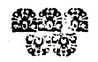
EM LISBOA.
Na Officina de Ioam da Costa.
[Pg 3]Com todas as litenças necetiarias. 1679.
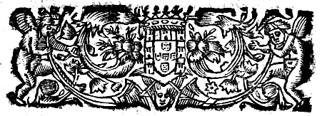
Sigo o discreto dictame de Parisatis[1] Rainha de Persia, que costumaua dizer, que com os Principes naõ se ha de falar, senaõ com palauras de seda.
[Pg 4]
Palauras de seda, saõ as que digo a V. A. não só pella summissão com que fallo, mas tambem pella materia, de que trato. A materia deste liuro, he a cultura das Amoreiras, ordenada à criação dos Bichos da seda, (artificioso thesouro das mais opulentas Monarquias,) porque de todas as vtilidades, que a industria & trabalho dos homens, pode grangear, nenhuma se iguala à cultura destas plantas, & à criaçaõ destes insectos.
Duas saõ as fontes de todas as riquezas dos Imperios, a natureza, & a Arte, a natureza nas[Pg 5] Minas, & a Arte nas Manufacturas, com esta differença que as riquezas, que se encerraõ nos Erarios da natureza, naõ se alcançaõ senaõ com os grandes dispendios, & trabalhos, com que se abrem as entranhas da terra, se reuoluem os Elemẽtos, & se perturba o antigo silẽcio dos mais profundos Abismos, para delles se tirarem os metaes gerados com as secundas influencias dos Planetas; Mas com muito menòr gasto & trabalho, se conseguem as riquezas, que por meio das Artes se procurão, & sendo a Arte da seda a mais lucratiua de todas as[Pg 6] Artes, muito deue Portugal ao cuidado, & generosa liberalidade, com que V. A. solicita a introducção desta Arte no seu Reino, que como aduirtio[2] Plutarco no 2. liuro das virtudes de Alexandre, do mesmo modo, que as plantas frutificão com a clemẽcia dos ares, assim florecẽ as Artes com a munificencia dos Princepes.
Em todas as historias, antigas, & modernas, celebra a fama o zelo, cõ que os Reys, & os Emperadores solicitàrão a introducção[Pg 7] das sciencias, & das Artes que elles conhecèraõ proueitosas para a conseruaçaõ, & augmento dos seus Estados; em hum Princepe pois taõ perfeito, como V. A. naõ podia faltar huma taõ illustre excellencia para o estabelecimento desta Arte taõ nobre, & tão vtil ao Reino; quãto mais que para a execuçaõ desta grande empreza, tem V. A. diãte dos olhos os exẽplos dos maiores Potentados da Asia & da Europa.
A cultura, & criação dos bichos da seda, se não conheceo em Europa atè o anno de 700 da Redempção do mundo, no qual dous[Pg 8] Mõges[3] vindos da Persia, ou da China, trouxerão a Constantinopla a semente dos bichos, & mostràrão â curiosidade daquella Corte, o admirauel, & quasi misterioso processo da vida daquelle bicho, que nace, quando as Amoreiras começão a se cobrir de folha, se sustenta della menos de dous mezes, atè se cerrar dẽtro de hũ[Pg 9] casulo, que forma de si mesmo, architecto, & hospede do seu aposento, donde com prerogatiuas de Fenis, sahe borboleta, a gerar a semente, que se guarda sem nẽhum cuidado, atè se tornar a animar nos primeiros alentos da Primauera.
Foi se introduzindo a criação deste prodigioso insecto na Grecia, pellas ordens do Emperador Iustiniano, mas não passou às mais Prouincias de Europa, porque Italia ocupada de naçoẽs barbaras tinha naquelle tempo perdida a antiga policia, & França, & Hespanha estauão padecendo as[Pg 10] rusticas oppressoẽs do mesmo jugo.
Estaua esta Arte tão valida na Asia, que os dous maiores Reinos della, os mais polidos, & melhor gouernados, a saber a China, & a Persia, deuião jà então, & deuẽ hoje a mayor parte da sua opulẽcia, à criação dos bichos, & à Arte da seda.
Na China, se tem porcerto que se achou esta producçam, & da China se repartio por todo o Oriente, toda a prata do Iapão passa à China a troco da seda, & hoje passa huma grande parte da prata do Potossí pellas Filipinas âquelle grande Imperio pellas sedas,[Pg 11] que delle nauegão os Castelhanos à America.
A Persia, mete na India a troco de prata, & ouro, Cafilas riquissimas de seda, & por Alepo manda continuamente aos Setentrionaes, Cafilas de seda, que carregão as naçoẽs do Norte, em Alexandreta, & Esmirna nas muitas frotas que sabemos; de forte que, os dous maiores Imperios da Asia, deuem a sua grandeza, a esta rica cultura.
Os Arabes, depois que occuparão a Persia, passarão esta ar e às mais Prouincias que dominarão, à Scitia, & a toda a Asia menor;[Pg 12] por elles passou a Hespanha, & se cultiuou em Granada, dõde sahia a melhor seda, que se conhecia em Europa, & elles leuarão esta cultura a Sicilia, aonde ficou, depois que forão lançados daquella Ilha, & dali se cõmunicou a toda Italia.
Em Sicilia, & principalmente em Messina, se cultiua com tanta abundancia, que naquella Cidade, metem os estrangeiros só pella seda em rama, mais de hum milhão & meio de patacas todos os annos, & assim a nobreza daquella Cidade, como a de Napoles, Bolonha, Florẽça, & outras muitas de[Pg 13] Italia, deuem a sua sussistencia a esta cultura, porque assim como, em Portugal, a nobreza via ao campo às vindimas, & ao recolher da azeitona; vão là, à criação dos bichos, que fazem com menor despeza, & trabalho, & cõ lucro incõparauelmẽte maior.
Faltaua esta cultura a França, aonde, Henrique IV. depois de cõseguida a paz, quis por este meio introduzir a abundancia: ordenouse huma junta, que sò se aplicasse aos meios desta introducção, primeiro na cultura das Amoreiras, & logo na criação dos bichos, as palauras do decreto com que[Pg 14] se passarão as ordens, aos 13 de Outubro de 1602. são as seguintes. El-Rey no seu Conselho, conhecendo que a introducção das sedas, nas terras da sua obediencia, he o mais conueniente remedio para euitar a saida, que todos os annos se faz, de quarto milhoẽs de ouro a terras estrangeiras para a compra das sedas, & por ser conueniente esta introducção ao decoro publico, à occupação, & riqueza dos pouos do seu Reino, depois de ouuir os cõmissarios, & ver as experiencias, & conhecer por estas a facilidade, & vtilidade que virà a nossos subditos, &c.
[Pg 15]
França hoje entre as gloriosas acçoẽs de seu Rey, conta esta por hũa das mais singulares, por ser hum dos maiores fundamentos de sua riqueza; & suposto que nem todo o Reino he capaz de produzir a seda, he o trato cõmum, & a occupação geral de tres Prouincias, Langadoc, Prouença, & Delfinado, & da Cidade de Turs. Em todas estas Prouincias, creceo o numero da gente, & as Cidades dobrarão o numero das casas, & dos habitadores, & se applicàrão os Francezes de sorte na fabrica das sedas, que não lhe bastãdo a que trabalhão, mandão frotas a[Pg 16] Italia, & Esmirna a buscar seda para trabalharem, que depois em obra repartem por toda Europa.
A vista desta vtilidade se applicarão no Piemonte à esta cultura, & hoje tem seda para venderem aos Francezes em Rama, & para muitas fabricas, que tem de excelentes veludos, & damascos.
Naõ necessita V. A. destes exẽplos para se animar à execuçaõ de hũa semelhante empreza, que a razaõ de Estado, a zelo dos Ministros, & o mesmo Ceo fauorece com a benignidade do clima, cõ que fez ao Reino de Portugal mais capaz que todos os da Europa para produsir a seda.
[Pg 17]
A producção das amoreiras, & a criação dos bichos da seda, hão mister clima temperado, & daqui nace, que entre os Tropicos, & fora de 45. graos ao Norte se não faz esta criação, & se em algumas partes se fas; he com grande trabalho, & com pouco fruto. Depois de 25. graos até 45. se dâ com abundancia esta producção, & daqui vem a abundancia da Persia, que tem as melhores Prouincias nesta altura, como tãbem da China na Prouincia de Nanchim, & nas mais que correm de 25. até 45. ao Norte. Em toda esta distãcia as Prouincias, que estaõ no[Pg 18] meio das duas extremidades, que estaõ mais distantes do frio de 45. gràos, & da calma de 25. são as mais benignas, & as mais abundantes na criação dos bichos.
Portugal, começando da foz do Guadiana, atè a foz do Minho, està situado de 37. graos até 42. na mesma altura de Granada, & Murcia, de Messina, & Reino de Napoles, de Alepo, da Persia, & da Prouincia de Nanchim na China, que saõ as partes do Mũdo, que melhor produzem a seda, & com menos cuidado, & trabalho, se dão, & se crião os bichos, dõde se segue, que produzir à Portugal[Pg 19] com abundancia esta excellente materia.
Ià desde muitos annos a experiencia o tem mostrado assim, na Prouincia de Tras-os-montes, sem embargo de que he a parte mais setentrional deste Reino, & daqui se pode colher, o que serà, nas Prouincias mais chegadas ao meyo dia, principalmente em Alemtejo, Algarue, & Estremadura, & jà de dous annos a esta parte se tem experimentado esta verdade nesta Corte de V. A. que tem o mais benigno, & tẽperado Ceo, que se conhece na Europa, porque a seda, que se tem tirado dos bichos,[Pg 20] que se criarão nas casas, em que se deu principio âs manufacturas, he mais forte, mais fina, & rende mais, que a melhor seda de Italia.
Suposto isto, se Portugal tiuer, (como facilmente pode ter) sedas em abundancia, terâ hum fruto, que não pode ter baxa, nem falta de saca, porque como as Naçoens estrangeiras, não podem criar seda nas suas terras, necessariamente a hão de ir buscar âs Prouincias, onde se cria; & se se criar em Portugal com a cantidade, que pode, virão carregar as suas naos a Lisboa, antes que a Messina, Alexandreta, & Esmirna, achando[Pg 21] tanta mais conta na seda de Portugal pella sua bõdade, como pello pouco custo, que farão com huma nauegação breue, de quatro, & seis mezes menos, & menos gasto de conboys, & riscos de Piratas, & terà este Reino que lhe dar a troco das drogas, & fazendas que meterem nelle, succedendo a Portugal o que a França, que lãçando quatro milhoẽs de si, antes de cultiuar, & laurar a seda, hoje recebe muitos milhoens pella que laura, que he em tanta copia, que nam tem, nem produz em si, a quarta parte da que ha mister[Pg 22] para as suas manufacturas.
A estas verdades taõ claras como o sol, se oppuzerão nuuens de contrariedades, & sendo as manufacturas da seda vteis a todos os Reinos, pretenderão alguns prouar, que a Portugal saõ perniciosas estas manufacturas.
A diuersidade das opinioens, de ordinario se origina, dos varios fantasmas da propria conueniẽcia, & do mesmo modo que cada Planeta luz com sua propria cor distincta, assim a maior parte dos homems buscão luzimentos com a cor que dão aos seus proprios enteresses; mas porque as cores que[Pg 23] se vem no ar, não sempre são intrinsecas, & verdadeiras, mas sô superficiaes, & apparentes, aos olhos dos mais perspicazes Ministros de V. A. parecerão aereas, & fantasticas as cores, com que estes quimericos estadistas pretenderão vestir a fallacia dos seus argumentos.
A mais forçosarazão de que se quizerão valer, foi, que prohibindose neste Reino, (como serà preciso, depois do perfeito estabelecimento das manufacturas da seda) todos as sedas dos Reinos estrangeiros, infaliuelmente faltaria a saca das drogas do Brasil, com[Pg 24] manîfesta destruiçaõ do comercio, que ate agora se sustentou pella continua entrada, & sahida do açucar, & do tabaco.
Semelhãte objecção a esta se fez aos Ministros del Rey Christianissimo, quando por ordem daquella Magestade, forão prohibidas em França as manufacturas dos outros Reinos; porque com zelosa ignorancia lhe foi representado, que os Ingrezes, & Holandezes não virião mais a França buscaros vinhos, nem os trigos, com que todos os annos carregauão suas frotas: mas deu a experiencia a conhecer a futilidade desta[Pg 25] objecção, porque no tempo que a tranquilidade da paz deixa liure o comercio destas Naçoẽs, não cessão os Ingrezes, & Holandezes de carregar infinitas embarcaçoens com os vinhos, & trigos de França.
A indigencia, & a necessidade saõ os fundamentos da vniaõ, & sociedade humana, & foi effeito da diuina[4] Prouidencia, que algũas terras careceßem dos mãtimẽtos, & regalos, de que outras[Pg 26] abundaõ, paraque com os vinculos do comercio se vnissem os habitadores das mais remotas Regioens do mundo; logo he taõ infaliuel, o comercio da Europa com o Brazil, que de duas huma, ou quererà a Europa passarse de açucar, que he o mais delicioso mimo da terra, & austerse do tabaco, que he o mais attractiuo feitiço da natureza; ou com huma prodigiosa mudança dos ares, & sobre natural melhor a dos climas, se farà a Europa capaz de produzir o que ateagora naõ produzio desde o principio do mundo, senaõ em algumas partes do Reino de Sìcilia,[Pg 27] & em taõ pequena cantidade, que naõ sei se he sufficiente para prouer a ametade d’Italia.
O açucar pois das Barbadas (Ilhas da America) he muito inferior ao do Brazil na quantidade, & qualidade, & porque em todos os Emporios do mundo, as drogas mais finas, saõ as mais appetecidas, sempre o açucar do Brazil, terà sobre todo o mais, huma incontrastauel preferencia, verdade taõ certa, que hum dos mais celebres historiadores deste seculo escreueo ha mais de sessenta ãnos, que naõ sò a venda do açucar do Brazil he infaliuel mas que tambẽ[Pg 28] he certissimo o lucro desta venda.[5]
Com outra razaõ taõ futil como a primeira, condena o aparente zelo de alguns, o estabelecimento das manufacturas da seda neste Reino, & he que cessando nas alfandegas os direitos que se pagaõ da entrada das sedas estrangeiras, naõ hauerà dinheiro, com que pagar os filhos da folha.
[Pg 29]
Mas facilmente remedearà V. A. este inconueniente com os direitos que se pagaraõ a V. A. de toda a seda que se fabricar no seu Reino, dandose a V. A. hum tanto por cada arratel, conforme se paga a el Rey de Castella, & se se plantarem neste Reino cinco ou seis milhoens de amoreiras, daqui a poucos annos hauerà huma taõ grande abundancia de seda, que os direitos da que se fabricar no Reino & suas conquistas, com os da que se repartirà com os Reinos estrangeiros, importaraõ hũa excessiuamente maior summa de dinheiro, que a que hoje se tira de todos[Pg 30] os direitos da alfandega.
Tem os Ministros de V. A. ponderado estas razoens com madura prudencia, & porque os bons principios saõ o presagio das venturas que se seguẽ, no felice exordio desta empreza, todos estaõ preuendo a publica vtilidade dos futuros progreßos.
A V. A. pois, como suprema intelligencia, que moue, & regula os orbes da sua Monarquia, agradece esta era, & successiuamente agradecerà a Posteridade os victoriosos impulsos desta gloriosa determinação.
Huma das maiores felicidades[Pg 31] de hum Reino, he que o Rei se enriqueça sem empobrecer aos pouos; com as manufacturas da seda; procura V. A. este bem comum, como verdadeiro pay dos seus vassalos, & quererá o Ceo, que no Reinado de V. A. logremos Portuguezes em realidade, as ditas, que os Poetas fabulosamente attribuirão ao seu seculo dourado.
Assim o espero, & peço a V. A. queira aceitar com agrado este pequeno trabalho, que entre os estudos mais serios, & proprios da minha profissão, tomei, por se me significar da parte de V. A. o gosto, que teria de ver esta materia praticada[Pg 32] em lingoa Portugueza, pella grande vtilidade que della resultarià ao Reino; não esperando eu do desuelo, com que desejo de me empregar, em tudo, o que toca ao seruiço de V. A. outro premio, que o ver effeituados os tão proueitosos documentos, que neste liurinho se encerrão.
Aos dous Religiosos, que primeiro mostràraõ na Corte de Constantinopla os prodigiosos segredos da natureza na criação dos bichos da seda, fezo Emperador Iustiniano consideraueis merces de presente,[6] prometendolhe outras maiores para o futuro, & para[Pg 33] mim as maiores, que podere receber da Real grandeza de V. A. serâm a da sua beneuolencia, & protecçam, junta com o conhecimento, de que ainda que estrangeiro no sãgue, sou Portuguez no amor, & se a Inglaterra deuo o nacimẽto, a França a criaçam, & a Italia, o habito, da sagrada Religiam que professo, em Portugal deuo à summa piedade de V. A. tam singulares beneficios, que em demonstraçam do meu agradecimento,[Pg 34] de sejo de vencer todos os vassallos de V. A. no affecto, no zelo, & no obsequio. Deos guarde a Real pessoa de V. A. como estes Reynos haõ mister, & todas os seus vassallos desejamos.
De V. A. o menor Capellaõ, & Orador.
D. Rafael Blvteav.
Clerigo Regular da diuina Prouidencia.
[1] Parisatis mãy de Cyro, Rey de Persia.
[2] Vt fruges sub grata aëris temperie proficiunt; sic scientiæ, & artes sub dominantium liberalitate, honorificentia, benignitate. Plutarch lib. 2. de virtute, & fortuna Alexandri.
[3] Telȩ sericȩ ætate Iustiniani Imperatoris cȩptȩ, quæ priùs à Persicis mercatoribus tantùm deferebantur, cum ignorarent quomodo fierent, nec scirent fila esse vermium. Cæterùm originem illius duo Monachi ex India Byzantium profecti, declararunt, fœtumque illorum vermium, oua nimirũ peregrina attulerunt, & in fimo collocata in vermes transformarũt, & mori folijs aluerũt, indeque naturâ magistrâ ipsis filnm reddentibus, sericum confecerunt. Zonaras 3. Annal. tom. 3. p. 95.
[4] Effecit Deus, vt alter alteriûs indigeremus, vt sic nos quoque conjungeret; quoniam amicitias maximas facit vsus, & indigentia, propterea nec omnia vbique gigni permisit, vt inde etiam cogeret permisceri, Chrisost. hom. 34. in 1. ad Corinth.
[5] Ex ea merce negotiatores, vel maximum capiunt emolumentnm, siquidem nauibus quotannis in Europam euecta, certissimo compendio longè, latéque diu enditur.
Maffæus in libro secundo historiarum Indicarum, mihi pag. 68.
[6] Eos Monacos Iustinianus, in præsentia, muneribus; de cætero magnis pollicitationibus ad illud præstandum confirmauit. Procopius Cæsariensis, & ex eo Zonaras 3. Annalium tom. 3.
Por ordem dos muito Reuerendos Padres Consultores de nossa Religiaõ, vimos este Liuro intitulado: Instrucção sobre a cultura das amoreiras, & criação dos bichos da seda, composto pello P. D. Rafael Bluteau, Clerigo Regular, Theatino da diuina Prouidencia, Calificador do S. Officio, & muito conhecido nesta Corte, por seu singular engenho, & admirauel eloquencia, nos melhores pulpitos della, & não achamos contenha cousa algũa contra a nossa S. Fè, & bons costumes. He pequeno o Liuro na materia, pello que trata de hum bichinho, não conhecido de muitos, & pouco estimado de quasi todos, & he muito grande na calidade, porque a se obseruarẽ bem os documẽtos, que dà o Author, he certo resultaràõ grandes vtilidades ao Reyno, que por falta das manufacturas se vè taõ exhausto, & diminuido de dinheiro, com gèral dor de todos os zelosos do seu acrecentamento; & quando a obra por si só naõ fora de tanta estimação, o seria pella elegancia com que o Author a escreue, com clareza, verdade, & compendiosas regras, & nam duuidamos, que o particular gosto, com que a lemos, abranja a todos os que a lerem, & assim nos parece muito digna de se dar à estampa, para que o Reyno logre as prosperidades, que ella lhe promete, & o Autor o nome de zeloso, & amante do Reyno de Portugal, que he o de que mais se preza, & com que em parte lhe quer pagar os aplausos, & affecto, com que o ouuem. Lisboa em o Conuento de N. S. da Diuina Prouidencia aos 28. dias do mez de Março de 1679 annos.
D. Luis Maria Sacchi, Clerigo Regular Theatino da Diuina Prouidencia, Doutor na sagrada Theologia.
D. Nicolao Barby, Clerigo Regula Theatino Diuina Prouidencia, Doutor na sagrada Theologia.
Consultores Clericorum Regularium.
Hoc opus inscriptum (Instrucção sobre a cultura das amoreiras, & criação dos bichos da seda) à P. D. Raphaele Bluteau Anglo. nostræ Congregationis Theologo, Lusitano idiomate compositum, & juxta assertionem Patrum, quibus id cõmisimus approbatum, vt Typis mandetur, quoad nos spectat, facultatem concedimus. In quorum fidem præsentes litteras, manû propria subscriptas, solito nostræ Congregationis sigillo firmauimus. Romæ die 2. Nouembris 1678.
D. Leonardus Duardus Consultor C. R.
D. Emmanuel de Puteo Consultor C. R.
D. Michael Pignatellus Consultor C. R.
D. Ioannes Augustinus Griti, Secretarius.
Por ordem dos Senhores do Cõselho geral do S. Officio, vi a Instrucção sobre a cultura das amoreiras, & criação dos bichos da seda, que cõpoz o M. R. P. Doutor D. Raphael Bluteau, Clerigo Regular Theatino da Diuina Prouidẽcia, Prégador da Rainha mãy de Inglaterra, & Qualificador do S. Officio em este Reyno, sogeito taõ conhecido, que naõ só nas Naçoens estrangeiras, como he para elle a nossa, mas até na propria patria he celebrado seu talento, por peregrino; naõ contẽ o Tratado cousa, que offenda a nossa S. Fè, ou bons costumes; antes cõ elle seu Author, não só instrue, mas anima as almas cõ muitos documentos para a virtude, & aos Portuguezes cõ muitas liçoẽs para o augmento do bẽ cõmũ porque ainda que este estiuera por hũ fio, mostra que cõ os fios de hũ bichinho, pode a industria humana ajudada da Prouidencia Diuina, não sô sustentar, mas enriquecer a Monarchia, cõ o que ficarà immortal seu nome na nossa memoria, pois nũca dirà Portugal de seu engenho, o que disse da arte do bicho da seda, Ioão Ouuen no liu. 2. dos seus Epigramas: Epigram 178.
Arte mea pereo, tumulũ mihi fabricor ipse,
Fila mei fati duco, necemque neo.
Este he o meu parecer. Carmo 8. de Nouẽbro de 1678.
O Doutor Fr. Gregorio de Iesus.
Vista a informação, podese imprimir a Instrucção sobre a cultura das amoreiras, & criação dos bichos da seda, Author o P. D. Raphael Bluteau, & impressa tornarà para se conferir, & se dar licença, para correr, & sem ella não correrà. Lisboa 8. de Nouẽbro 1678.
Manoel de Magalhaens de Menezes.
Manoel Pimentel de Sousa.
Manoel de Moura Manoel.
Fr. Valerio de S. Raymundo.
Podese imprimir. Lisboa 17. de Nouembro de 1678.
Fr. C. Bispo de Martyria.
SENHOR.
Este Tratado, não só he digno de impressaõ, mas necessario; os argumentos da vtilidade priuada, donde resulta a publica, saõ demõstraçoẽs visiueis. O seu Author, ainda que estrangeiro por origẽ, he bẽ nacional nos affectos, empregando o que estudou fóra, no edificio deste alicerse, aonde ha de estribar hũa grãde parte da prosperidade do Reyno, o que o faz digno de hum singular louuor, V. A. mandarà, o que mais conuier a seu Real seruiço. Lisboa de Feuereiro 10. de 1679.
Antonio Vellez Caldeira.
Qve se possa imprimir, vistas as licenças do S. Officio, & Ordirio, & depois de impresso rornarà à Mesa, para se taixar & conferir, & sem isso não correrà. Lisboa 11. de Feuereiro de 1679.
Marquez P. Roxas. Basto. Rego.
Visto estar cõforme com o Original, pode correr este Liuro. Lisboa 21. de Iunho de 1679.
Fr. C. Bispo de Martyria.
Taixão este Liuro em cem reis. Lisboa 27. de Junho de 1679.
Magalhaens de Menezes. Roxas. Basto. Rego.
[Pg 35]
As artes[7] liberaes, & mecanicas, saõ as fontes do bẽ commum, as bases das Republicas, & as columnas[8] dos Imperios; humas se empenhão no sustento da vida, como a agricultura;[Pg 36] outras se armão contra as inuasoens dos inimigos, como a milicia; & outras se desuelão para o descubrimento, & conquista de terras estranhas, como a nautica; de donde se segue, que florecem as Monarquias com tanto maior gloria, & felicidade, quãto maior he o numero, & a perfeição das artes; que nellas se exercitão.
Nas artes mais nobres, sempre floreceo a Lusitania, admirou o Parnasso a elegãcia dos seus Poetas, estranhou Neptuno a ouzadia dos seus Argonautas, & Marte enuejou a valentia dos seus Capitaens,[Pg 37] mas sempre se mostrou o pouo de Portugal descuidado das artes inferiores, em que comummente se occupão os pouos dos outros Reinos; Antipatia deue ser que o brio da nação tem com acçoens do vulgo, & conhecendo-se cortada para heroicas emprezas, se enuergonha de se abater a plebeios exercicios. Nisto saõ os Pouos de Portugal semelhantes aos de que escreue[9] Xenophonte, que nunca se occupauaõ em Artes mechanicas, para que naõ degenerasse a nobreza do animo, cõ a humildade do exercicio. Mas[Pg 38] suposto que esta briosa liberdade aceredita a bizarria dos genios, he muito prejudicial ao bem cõmum dos Estados, porque della se occasiona hũa perpetua, & quasi natural ociosidade no pouo, & a ociosidade dos pouos, he causa da pobreza dos Reinos.
As tres materias, sobre que obrão todas as artes, (que genericamẽte chamão lanificas) saõ laã, linho, & seda, mas deixando as primeiras duas, que naõ saõ deste lugar, a mais nobre, a mais lucratiua, & a mais misteriosa, he a arte da seda.
A Nobreza desta arte serue de[Pg 39] estimulo à altiua inclinação dos Pouos; o lucro que della se tira, alẽta as esperanças dos mercadores, & os misterios que nella se descobrem, despertão a admiração dos Sabios.
Em primeiro lugar, he esta arte tão nobre, que pode seruir de occupação à mesma nobreza, sem desdouro do seu luzimento, como se experimenta em quasi todas as Cidades d’Italia, porque nas partes aonde està introduzida a criação dos bichos da seda, naõ ha caza nobre, em que os senhores della, naõ se occupem neste apraziuel exercicio, & em[Pg 40] muitas cazas ha teares, em que até as molheres tecem fitas, ou sedas ligeiras para adorno das suas cazas, & das suas pessoas. A nobreza das sciẽcias, & das artes, se mede pella calidade dos seus objectos, & que cousa mais nobre, que a seda, que he o objecto, & a materia, sobre que esta arte se exericita. A nobreza, serue a seda, nas galas; aos Senadores, nas Togas; aos Capitaẽs, nos Estãdartes; aos Sacerdotes, nas sagradas vestiduras; aos Bispos, nas Mitras; aos Cardeaes, nas Purpuras; aos Monarchas nos Diademas; & aos Pontifices, nas Tiaras.
[Pg 41]
As Damas, offerece a seda flores, que não murchaõ, nas primaueras; chamas, que naõ offendem, nos carmezins; no lauor dos bordados, labirintos sem confusaõ, & nas ondas dos chamalotes, mares sem tormentas, & sem naufragios. Serue a seda para as pompas funebres, & para os triumphos, he o enfeite das Cortes, o apparato dos Palacios, o ornato dos Templos, & dos Altares, & o adorno dos mesmos Sanctuarios, retratos da gloria, & hospicios da Diuindade.
Em segundo lugar, a vtilidade, que se tira da criação dos bichos[Pg 42] da seda, melhor se conhece pella experiencia, que pello discurso. Duas amoreiras grandes, ou quatro pequenas, bastão para sustentar meia onça de bichos, que produzẽ seis arrateis de seda, a qual quãtidade posta em meadas, val tres mil reis o arratel, de sorte que hum trabalho, ou huma curiosidade, que naõ custa dous mil reis, no espaço de outo semanas ao mais, rende dezoito mil reis. Os pobres pois, que naõ tem campos para cultiuarem amoreiras, nem cazas sufficientes para a criação dos bichos, se podem occupar em tirar, & dobar a seda, & esta he[Pg 43] hũa occupaçaõ honesta, & vtil, principalmente a muitas mulheres honradas, que em outros exercicios de maior trabalho, & de menos proueito, gastão a vista, a saude, & a vida. Nas Prouincias de Flandes,[10] se contaõ mais de doze mil pessoas, que se sustentão só de dobar a seda, que lhe vem em rama, nas frotas da companhia das Indias Orientaes. Com esta mesma[Pg 44] occupação, jà se sustentam em Lisboa, mais de trezentas pessoas, que dobão a seda, que se laura nos cincoenta teares, das nouas manufacturas, & crecendo (como se espera) o numero das amoreiras, & teares, até se poder laurar toda a seda, que he precisa, para o Reyno, & suas Conquistas, serà tam vniuersal a occupação de dobar a seda, que poucas familias pobres hauerà em Portugal, a que falte o sustento, se se occuparem neste exercicio.
Além da ganancia, que a criaçam dos bichos, o dobar da seda, & todos os mais officios dependẽtes[Pg 45] das manufacturas, prometem aos pobres, a cultura das amoreiras promete à Nobreza grandes vtilidades, & riquezas, porque muito mais facil, & proueitosa he a cultura destas plantas, que a das oliueiras, & larangeiras, em que muitas cazas de Portugal, tem hũa considerauel parte das suas rẽdas, porque as oliueiras naõ dam fruto, se nam depois de muitos annos, & as larangeiras, nam medram, se nam em terras mimosas, & hũas, & outras estam tam sogeitas às inclemencias do tempo, que hum vẽto, hũa neuoa, ou hũa chuua intempestiua, he sufficiente[Pg 46] para destruir as nouidades. Pello contrario, a cultura das amoreiras, he tam facil, & tam breue, que em tres, ou quatro annos, se poem hũa amoreira, em estado de se começar com ella, a criaçam de muitos bichos, & a natureza lhe deu a propriedade, de lhe nam fazer dano, mas antes lhe ser vtil, tirar-lhe as folhas. A duraçam pois desta aruore he tal, que nas Prouincias onde se cultiua, nam ha memoria do tempo, em que foram plantadas. As amoreiras, se crião neste Reyno, em toda a terra, sem ser necessario occupar a melhor, nos mõtes, & ainda entre as areas;[Pg 47] o publico pôde ordenar, se plantem junto dos caminhos, como se fez em França, & Italia, & os particulares podem cercar dellas as suas quintas, & vinhas, considerãdo que as folhas desta aruore, saõ mais proueitosas, que os frutos das melhores plantas, como se tem experimẽtado, estes dous vltimos annos, nesta Cidade de Lisboa, & em algũas partes da banda d’alem, aonde a folha de cada amoreira, rendeo a seus donos, cinco, seis, & até outo tostoens. Por onde augmentandose a criação dos bichos, ao mesmo passo que crecerem, & se cobrirem de folhas as amoreiras,[Pg 48] nouamente plantadas, os rendimentos de hum moral de cinco, ou seis mil amoreiras, seràm muito maiores, & mais certos, que os de hum oliual, ou laranjal, de outras tantas mil oliueiras, ou laranjeiras, finalmente com a cultura das amoreiras, & criaçam dos bichos, se farà a Nobreza mais rica, ficarà a pobreza aliuiada, & a ociosidade desterrada, se euitarà a sahida do dinheiro do Reyno, se abrirà o caminho ao muito que entrarà pellas maõs dos Estrãgeiros, a troco da seda em rama, terà Portugal muitas Prouincias da Europa, tributarias à sua industria,[Pg 49] & todas seraõ admiradoras da sua opulencia.
Nas maõs de Deos, os mais debeis, & despreziueis sogeitos, saõ os artifices das maiores marauilhas, tambem nas maõs dos Princepes, que saõ as imagens de Deos na terra, podem as materias mais humildes, & na aparencia mais inuteis, obrar prodigiosos effeitos; & se Deos antigamente destruyo ao Egipto com mosquitos, & gafanhotos, pode o Princepe nosso Senhor enriquecer a Portugal, cõ folhas, & com bichos, folhas de amoreiras, & bichos de seda.
Os bons Ministros dos Princepes,[Pg 50] saõ como as Aguias,[11] que da mais sublime Regiaõ do ar, vem na terra, os mais pequenos insectos: D. Luis de Menezes, Conde da Eyriceira, na suprema eleuaçaõ da dignidade, em que attende desuelado aos interesses da Monarquia Lusitana, vio com perspicacia de Aguia, aquelle insecto, sutilissimo artifice da seda, nesta Corte apenas conhecido, & com igual agudeza preuio os grandes emolumentos, que podia dar à Republica a criaçaõ, & multiplicaçaõ[Pg 51] desta industriosa creatura, para este effeito insistio o Conde, em que se prantassem amoreiras em todas as Prouincias do Reyno, deu ordem a que viessem de varias partes da Europa Officiaes para as manufacturas, & para esta noua introducçaõ, desfez tantas duuidas, venceo tantas opposiçoens, & se offereceo martyr do bem publico às penalidades de tantos, tam varios, & taõ impertinentes cuidados, que pode seruir de exemplar ao zelo, & amor da partia, de admiraçaõ à constãcia, & de perpetuo assumpto aos encomios da posteridade; jà se anticipa[Pg 52] a fama em applaudir as virtudes militares, & politicas, com que chegou aos mais sublimes postos, sem mais diligẽcia, que hauelos merecido, & se a sua penna, he a mina das luzes cõ que se manifestaõ ao mundo as façanhas dos Heroes de Portugal, algum dia a multidaõ das suas gloriosas acçoens, serà a muitos volumes de Annaes, illustre, & ineuitauel embaraço.
Mas porque na gloria das victorias, que de ordinario se attribue ao valor dos Capitaens, naõ deixa de ter sua parte a valentia dos soldados; tambẽ na prudente[Pg 53] Economia dos Estados, tal vez se acreditaõ os Ministros inferiores, sem prejuizo da gloria dos supremos Suposto isto, razam he, que para memoria dos vindouros, se faça aqui mençaõ do zelo, habilidade, & desuelo, com que Rolando du Clos tẽ proposto, solicitado, & adiantado esta noua introducçaõ das manufacturas da seda, com taõ euidentes experiencias, & cõ taõ felice successo, que toda esta Corte se admirou, de quese fizesse taõ vtil a Portugal, a industria de hum Estangeiro; mas a verdadeira patria dos sogeitos de talento, he a terra em que[Pg 54] exercitaõ as suas virtudes, & entre as muitas differenças que ha entre os homens, & os animaes, hũa das principaes, he que os animaes achaõ a sua patria, & os homens a escolhem; aquelles achão por patria a terra, em que nacẽ, & estes escolhem por sua patria, a terra em que pretendem fundar sobre os alicerses da sua virtude, a sua fortuna; com esta consideraçam escolheo Rolãdo du Clos a Portugal por sua patria, & està taõ naturalizado, que atreuendo-se a hũa empresa maior, que as suas forças, parece tem tresladado em si os brios da nação Portugueza,[Pg 55] que sempre fez facil ao seu valor, tudo o que conheceo superior, ao seu poder.
Cõ generosa, & discreta emulação, quizeram lograr juntamẽte com Rolando du Clos, a gloria desta empresa, como socios no mesmo negocio, & companheiros no mesmo trabalho, Francisco Lopes Franco, varaõ de muita virtude, & prudencia, muy conhecido nesta Corte, como benemerito do Reyno, & Ioão Soares da Costa, cuja intelligencia, & zelo do augmento do bem cõmum, promete grandes acertos, para o perfeito estabelecimento desta fabrica,[Pg 56] não reparando ambos em contribuir largamente para ella com sua fazendas, para que a de S. A. & dos seus vassallos se acrecente.
De maneira que esta artificiosa maquina das sedas, que nos seus principios, estaua fundada sobre hũa só columna, tem hoje mais pessoas, que a sustentão, do que teue o fabuloso Ceo dos Poetas, porque descança nos hombros de tres Atlantes.
As obras da arte, tem como as da natureza, a sua infancia, & por debeis principios, sobem ao auge do seu augmento. A seda na boca[Pg 57] do bicho, que a forma, he hũ fio; nas anafayas, he tea; nos casulos, he nouelo; nas dobadouras, he meada, & assim crece a seda em quantidade, & perfeição, até que nas vestiduras do homem, chega a ser, o ornamento de hum pequeno mundo.
Do mesmo modo, teue esta fabrica da seda, alicerses tão frageis, como os da mesma seda, no exordio do seu ser, porque começou por hum tear de fitas, em menos de hum anno se virão armados cincoenta teares, em que se fazem tafetàs, gorgoroens, galas, primaueras, cetins, & telas, breuemente[Pg 58] trabalharàõ outros cincoẽta, & se correspõderẽ os progressos a estes principios, daqui a algũs annos, terà Portugal mais sedas, que lãas, & os que agora julgaõ esta empresa impossiuel, ou danosa ao Reino, conheceràõ a sua possibilidade, na euidẽcia do successo, & a sua vtilidade, na importancia do proueito.
Tenho mostrado como a arte da seda, he tão nobre, que pode seruir de exercicio à nobreza, & tão lucratiua, que nelle acharà o Reyno hũa mina de excessiuas riquezas, resta que vejamos como esta mesma arte, he tão misteriosa, que pode dar perpetuos motiuos[Pg 59] de contemplação, & admiração, à intelligencia dos Sabios.
O nacimento, criaçam, & vida dos bichos da seda, encerrão em si tão profundos misterios, que não sô por interesse, mas por recreação, & por curiosidade, podem occupar as pessoas mais virtuosas, as Religiosas, as Damas, os Philosofos, & mais doutos Theologos do mundo.
Os principaes artigos, & misterios da Fé Catholica, saõ a existẽcia de hum Deos, a Trindade das pessoas na natureza diuina, a Encarnação do Verbo, o nacimento de Christo, a adoraçaõ dos Reys[Pg 60] Magos, a transfiguração, a morte, & Resurreiçãõ do Senhor.
Todos estes misterios, no bicho da seda, admirauelmente se representam. Primeiramẽte aos Atheistas, filhos da incredulidade, & partos da cegueira, que nam tem olhos para o Deos, que os mesmos cegos adoraõ, mostra este insecto com palpaueis marauilhas, a existencia do Author da natureza; que se nam ha no mundo hum artifice supremo, qual he o Mestre das artes, que este prodigioso artifice, sem mestres exercita? fia, tece, & edifica, fia sem mãos, sem braços tece, & sem algum instrumento,[Pg 61] edifica o seu domicilio, & se com a efficacia da sua palaura, Deos fez ao vniuerso, este milagroso Arquitecto, sem voz, & sem falla, fabrica no seu casulo, hum pequeno mundo. As luzes da verdade abre os olhos, ô incredulo Atheista, & jà que nas luzes dos Astros, & nos brilhantes Planetas, nam ves da Diuindade os rutilantes reflexos, confessa que para proua de que no mundo ha Deos, este bichinho basta.
Adoramos a Deos, hum na essencia, & trino nas pessoas; & neste insecto admiramos, tres sogeitos distinctos em hũa sô natureza,[Pg 62] porque o principio do seu ser, he hum pequenino ouo da grossura de hum graõ de mostarda, do ouo nace hum bicho, & do bicho hũa borboleta; de maneira que em hũa sô substancia, se acham tres suppositos realmente distinctos; a substancia destes suppositos se cõmunica, mas não se cõmunicão os suppositos, & com tudo a substancia, & os suppositos saõ physicamente a mesma essencia, & esta essencia nos tres suppositos obra por differentes modos & do mesmo modo, que nas pessoas diuinas, hũa pessoa nam tem as perfeiçoens relatiuas da outra, suposto[Pg 63] que cada pessoa he igualmente perfeita, mas antes fora imperfeiçaõ que a propriedade da primeira pessoa, se achasse na segunda, & na terceira, & assim não tem a pessoa do Pay a propriedade relatiua do Filho, nem o Filho possue a propriedade relatiua do Pay, nem ao Espirito Santo, se attribuẽ as perfeiçoens do Pay, em quanto Pay, nem as do Filho, em quanto Filho; tambem nos tres suppositos da substancia deste prodigioso insecto, nam tem o ouo as perfeiçoens proprias do bicho, nem o bicho, as da borboleta, nem a borboleta, as do bicho, nẽ do ouo,[Pg 64] porque o ouo nam anda como o bicho, nem o bicho voa como a borboleta, nem a borboleta, & o bicho perseueram sem corrupção de hum anno para outro, como o ouo.
No Verbo encarnado, estam vnidas duas differentes naturezas, a humana, & a diuina; & no bicho da seda se acham duas diuersas naturezas, porque como bicho he reptil, como borboleta he volatil; no reptil, se figura a humildade do ser humano, & no volatil, se simboliza a sublimidade do diuino.
Por virtude do Espirito Santo,[Pg 65] tomou o Verbo Eterno carne nas entranhas de huma Virgem; & a semente dos bichos se anima, ou com o calor do Sol, ou com o calor natural, no peito de huma donzella.
Christo entre palhas naceo, & o bicho da seda entre folhas nace; naceo o Senhor no mais profũdo silencio da noite, & o bicho da seda no silencio viue, & com os estrondos, morre.
No presepio, os Reys sabios buscaraõ ao Senhor, & saõ sabios os Reys, que procuraõ no seu Reyno a criaçam deste insecto. No Thabor, Christo se transfigurou,[Pg 66] & ficaraõ suas vestiduras brancas como a neue, tambem o bicho da seda se transfigura em hũa borboleta, que se iguala á neue na aluura.
O Senhor que a todos veste, morreo nù em hum madeiro, & o bicho da seda, que a todos dà de vestir, viue, & morre nù, retratto da paciencia, & da pobreza. Finalmente resuscitou o Senhor, & no sepulcro, deixou as mortalhas, & o bicho da seda rompe o casulo, em que estaua sepultado, & nelle deixa duas pelles, como despojos da morte, & trofeos da immortalidade. Mas he tempo que acabe,[Pg 67] & acabo aduirtindo aos discretos, que cada acçaõ do bicho da seda, he hum jeroglifico, & em cada jeroglifico, se significa hũa virtude.
Todos os documentos de bem viuer, se aprendem na contemplaçaõ da vida, & morte deste Rey dos insectos, a charidade, a prudencia, a penitencia, & o desengano das vaidades do mundo.
Que charidade mais entranhauel pode hauer, que desentranhar-se para vestir os nûs; forma o bicho da seda com a substancia das suas entranhas, os defensiuos com que os homens, se armaõ contra[Pg 68] as injurias do tempo, & para remedear necessidades alheas, conuerte em preciosas roupas, os seus proprios alimentos.
Que prudencia mais soberana, do que ordir innocentes enredos, para cõseguir gloriosas victorias; fia o bicho da seda os laço, em que se prende, & se encarcera a si mesmo, mas quando he tempo, quebra a prizam, & sahe victorioso. Nos labirintos da Corte, muitos se enredam no que tecem, mas nam se sabem desembaraçar, do em que se enredão.
Qual dos mais solitarios ermitaens pode competir com o bicho[Pg 69] da seda, nas asperezas da penitencia? & qual contemplatiuo Anacoreta, viueo como elle em hũa cella sem porta, & sem janella, jejuando com tam grande rigor, que pello espaço de muitos dias, nam toma hũa folha verde para seu sustento, & tam apartado deste mundo, que viue retirado em hum outro mundo, morto na apparencia, & na realidade sepultado.
Em conclusam, este mesmo insecto, que parece nascido para fomento de pomposas vaidades, he aquelle, que melhor nos desengana da vaidade das pompas humanas, porque a riqueza das sedas[Pg 70] que laura, nam he outra cousa, que o excremento das folhas, que come, & para nos aduertir, que a nossa vida depende de hum fio, à tecidura de hum o fio se reduzem todas as obras da sua vida; cuidemos todos na fragilidade da vida humana, para nòs assegurarmos hũa morte santa. A arte das artes he saber morrer, porque o premio desta arte, he o mesmo Deos na eterna bem-auenturança: Os erros, que nas mais artes se cometem, sam reparaueis, mas he irreparauel o desacerto de huma mà morte: Esta he a mais importante aduertẽcia, das que se encerrão[Pg 71] nesta introducção, fiz as duas primeiras como zeloso do bem do Reyno, & remato com esta, como desejoso do bem das Almas.
D. Rafael Blvteav
Clerigo Regular Theatino da diuina Prouidencia.
[7] Artes bonorum fontes esse aiuunt. Xenophon. de institut. Cyri lib. 7.
[8] Artes non ornamenta solum Reipublicȩ sunt, sed etiam auxilia, & fulcra. Lipsius in lib. de Cruce in præfat. ad barb. ord.
[9] Xenophon, in œconomico.
[10] In Belgio, Sericum crudum, quod magna copia ex Italia, & Regionibus Orientalibus, prȩcæteris verò ex Persia Societatis Indiæ Orientalis defertur (vt secundum rei veritatem à multis obseruatũ est) amplius, quam duodecim millia hominum occupat, qui tantummodo in eo separando, & glomerando occupantur. Schookius in Belg. fœder. lib. 7. cap. 19.
[11] Aquila Auis solaris est acuti visus, ita vt in summo Aere existẽs, quæ in terra subsident videat. Etzler. in Isagog. physic. cap. 4.
[Pg 72]
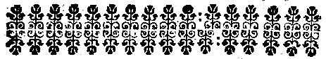
DOS PRINCIPAES AVTHORES, que escreueram o nacimento, criação, vida, & propriedades do bicho da seda.
Plinio, histor. natural. liu. 10. cap. 23.
Ieronimo Vida, Bispo de Alba, em dous Liuros, que tem composto em versos hexametros, de Bõbice.
Vlysses Aldourando, no seu Liuro de Insectis.
Simão Maiolo, Bispo de Vulturara,[Pg 73] no seu Liuro intitulado, Dies Caniculares, no Colloquio quinto.
Luis de Granada da Ordem de S. Domingos, na introducçam do symbolo da Fè, p. 1. cap. 21.
Gaspar Kiokio, Iurisconsulto Alemaõ nos Tratados, que fez de Ærario, liu. 2. cap. 6.
E Christouão Pellero, nos Cõmentarios que fez sobre os mesmos Tratados.
Thomas Garzoni, Author Italiano, no Liuro chamado, Piazza Vniuersale, liu. 4. cap. 1.
E Christouaõ Isnardo; em hum Liuro cõposto em Idioma Francez, impresso em Paris no anno de 1665.
[Pg 74]
Este vltimo Author, escreueo sobre a cultura das amoreiras, & criaçam dos bichos da seda, mais clara, diffusa, & methodicamente, que todos os mais, & por isso delle se tirou a maior parte das noticias, que se encerram nos seguintes Capitulos.
[Pg 75]
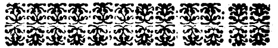
DOS CAPITULOS, QVE contem este Liuro.
Cap. I. Das differenças das amoreiras, & das suas excellencias.
Cap. II. Varios modos de plantar as amoreiras brancas, & pretas.
Cap. III. Modo de transplantar as aruores nascidas por semente.
Cap. IV. Modo de plãtar as amoreiras[Pg 76] por mergulho.
Cap. V. Modo de plãtar as amoreiras por estaca.
Cap. UI. Modo de plãtar as amoreiras por enxerto.
Cap. VII. Como se deuem entreter as amoreiras.
Cap. UIII. Modo de colher a semente das amoreiras, para a semear.
Cap. I. Do lugar proprio para criar os bichos.
Cap. II. Regra para conhecer, & escolher os melhores grãos, & fazer[Pg 77] sahir os bichos.
Cap. III. Das mudas dos bichos, & como conuemtratalos no tẽpo dellas.
Cap. IU. Modo de colher, & conseruar as folhas das amoreiras.
Cap. V. Das doenças dos bichos da seda, & dos remedios, que se lhe podem aplicar.
Cap. VI. Segredo para fazer nacer sem semente, muitos bichos da seda, que daraõ excellẽtes grãos com abundancia.
Cap. UII. Modo de fazer sobir, & fiar os bichos da seda.
Cap. UIII. Do tempo em que os casulos se haõ de tirar dos ramos.
[Pg 78]
Cap. I. Do modo com que se deuem aparelhar os casulos para delles tirar a seda, & como se podem conseruar muito tẽpo, impedindo que as borboletas naõ os furem.
Cap. II. Como se deuem escolher os casulos, & vnir as borboletas para que ponhaõ a semente.
Cap. III. Da forma do forno, dobadoura, & outros instrumentos para tirar a seda.
Cap. vlt. Do barbilho, & do modo de o aparelhar.
[Pg 79]
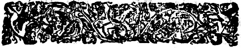
Das differenças, & propriedades das amoreiras.
Como o fundamẽto principal da seda, depende das amoreiras, esta rica aruore, cujas[Pg 80] folhas seruem de sustento aos bichos, serà o assumpto dos primeiro Capitulo deste Tratado.
Duas sortes de amoreiras se conhecem, hũas brancas, & outras negras. A differença, que as primeiras fazem das segũdas, começa pello fruto, porque produzem cõmumente amoras brancas, ou pardas, mais pequenas que as negras, & menos saborosas; as folhas saõ de hum verde mais claro, a casca, & a madeira mais branca, & he a razam, porque conseruam o nome de brancas, ainda que algũas produzão amoras negras.
Posto que as folhas de hũas, &[Pg 81] outras, siruaõ à nutritura dos bichos, as folhas das amoreiras brãcas se preferẽ às das amoreiras negras, por quatro razoẽs. Primeira, porque saõ mais tenras, & delicadas, & de melhor gosto, & alimẽto aos bichos: Segunda, porque produzem a folha vinte dias primeiro, que as outras, & se anticipa com ellas a criaçaõ dos bichos, de vinte dias, às calmas do mez de Iunho, que lhe saõ cõtrarias: Terceira, porque ellas aruores crecẽ, & se cultiuão mais facil, & breuemente, que as outras: Quarta, porque em algũas terras, a experiencia tem mostrado ser a seda[Pg 82] dos bichos, que se sustentaõ da folha destas amoreiras, mais fina, & de mais valor. Porém a experiẽcia tem mostrado, que a seda de Portugal, aõde sô se vza das amoreiras pretas, he melhor, que a mais fina de Italia, como que se podem só plantar as amoreiras brancas, pela segunda calidade de anticiparem as folhas, & suposta esta razam se podem pôr entre dez amoreiras pretas, duas brancas.
Ella aruore he a mais fermosa, & a mais vtil de todas as aruores, que seruem ao ornato dos cãpos, & ao proueito dos homens,[Pg 83] quanto à fermosura, o proua bem a sua vista, quanto à vtilidade, o manifestaõ os seus effeitos, que saõ a vnica riqueza de muitas, & grãdes Cidades.
Os seus troncos nam differem dos choupos, & de todas as outras aruores fortes, & resistem à agoa mais que todas, donde se segue, que seruẽ a todo genero de obras de terra, & mar, & alguns naturalistas escreuẽ, que a sua casca serue para fazer cordas, & para hũa fabrica de panos grosseiros.
A natureza prouida na criaçam dos bichos da seda, que hauiam de seruir ao ornato do mundo, izentou[Pg 84] esta aruore de toda a sorte de animaes immundos, & venenosos, que comem as folhas, & os frutos de todas as outras aruores, porque nenhum se vio jà mais nas amoreiras; este attributo, & este priuilegio da natureza, he propriedade especifica desta nobre planta.
He esta aruore taõ fertil na producção de seus ramos, que quem tem copia de amoreiras, tem lenha em grande abundancia para o fogo, sem incommodar as aruores.
A riqueza das suas folhas he tal, que duas aruores de justa grandeza,[Pg 85] bastaõ para o sustẽto de meya onça de graõs de bichos, os quaes criandose mediocremente, produzem seis, ou sete arrateis de seda, que de ordinario se vende por tres mil reis, o arratel.
As suas folhas, saõ o melhor alimento, que a terra produz para o gado, & o seu fruto o melhor, que se conhece para seuar galinhas, frangos, capoens, & toda a sorte de Aues.
[Pg 86]
Varios modas de plantar as amoreiras brancas, & pretas.
Ha quatro modos de plãtar, & criar esta vtil aruore.
Primeiro, por semẽte tirada das amoras.
Segundo, por mergulho dos ramos, que sahem ao pé da aruore, junto à terra.
Terceiro, por estacas, & ramos cortados, & plantados em outro lugar.
[Pg 87]
Quarto, por enxerto de amoreiras brãcas em pretas, ou em quaesquer outras aruores proprias para sofrer o enxerto.
Quanto ao primeiro modo, he conueniente que seja em lugar fechado, defendido, & abrigado dos ventos frios, & em terra cauada, mouida, & estercada com esterco meudo, & depois lançarlhe a semente na altura de hum dedo, de sorte que os graõs fejão bem cubertos.
O mesmo effeito produzem as amoras inteiras, postas hũa noyte de molho em agoa clara, & nam se meta, ou junto, ou entre as sementes,[Pg 88] algũa outra planta.
Se a terra he humida, nam he necessario regalas, porque cria hũa codea que impede, que a plãta saya; & por conseruar a humidade da terra, he bom cubrir o lugar, aonde està a semente, cõ palha, ou jũco, & se se semear na Primauera, conuem defender o lugar de Pardais, ou outras quaesquer Aues.
Ha duas sezoens proprias para esta cultura, por semente.
Primeira: Abril, & Mayo.
Segunda Iulho, & Agosto.
E em Portugal se pode anticipar, de hum mez a primeira.
[Pg 89]
A sesaõ da Primauera, he a melhor; em hũa, & outra sesaõ, se he possiuel, se deue escolher no quarto crescente da Lua hum dia claro, & sereno; meterseham as sementes em distancia de quatro pés de hũa a outra, & depois de pegadas em dias quentes, se pôdem, & deuem regar com instrumentos de arame, que tenham os buracos meudos.
Nas terras frias, ha outras cautelas, contra giadas, & neues, que entre nòs saõ inuteis.
[Pg 90]
Modo de transplantar as amoreiras, nascidas por semente.
Depois de plantadas as amoras (como fica dito) he necessario mouer, & trabalhar a terra, pello menos tres vezes cada anno, nos mezes de Abril, Iunho, & Agosto, quando a terra esteja, humida ou pella chuua, ou pello orualho, mas de sorte, que este trabalho da terra, nam toque as raizes.[Pg 91] Quando for necessario, se regaràõ sómente, porque a demasiada agoa, nam faça apodrecer as raizes.
Nos mezes de Março, & Abril seguintes, he necessario podar, & cortar cõ hum instrumento muito fino, os ramos que os troncos lançarem, o que se continuar à todos os annos, cortandose tambẽ o tronco no mais alto, meyo palmo sômente, & quando for crescẽdo, se lhe deixaràõ ao mais, tres ramos.
E como cõ este cuidado, & beneficio, chegarem à altura de seis pés, & à grossura de hum braço,[Pg 92] se transplantaràõ nos lugares aonde se quizerem pôr, aduertindo quese se houuerem de transplantar em campo descuberto, & exposto a todo o genero de animaes, serà conueniente deixar crecer as aruores, a outo pés de alto.
Isto mesmo, se obseruarà com as aruores, que vierem de Prouincias distantes, & lugares estrãgeiros; se vierẽ pequenas, se meteràõ em lugares serrados, & defendidos, com distancias proporcionadas, & se terà o mesmo cuidado de as cultiuar.
E se vierem da grandeza de seis, ou outo pès, as transplantaràõ logo[Pg 93] (como fica dito) fazendo, se puder ser, que cheguem nos mezes de Setẽbro, Outubro, & Nouembro, que he o tempo em que hũas, & outras se deuem transplãtar, ou ao menos nas Luas nouas de Março, & Abril.
Quando se transplantarem, se abriràõ cauas à proporçaõ das aruores, deixando as aruores mais na superficie, que no fundo da terra; mas he conueniente, que as cauas sejaõ mais altas, porque a agoa da chuua, que nellas entrar, farà pegar mais fortemente as raizes, & se lançaràõ nas cauas eruas arrancadas do campo, que vindo[Pg 94] a apodrecer, lhe seruẽ de esterco; mas estas eruas, naõ tenhaõ raizes, & quaesquer outras immundicias, saõ proprias para o mesmo effeito.
Serà necessario regalas no mesmo tempo, que se metem na terra, & nos mezes seguintes de Iulho, & Agosto, para que peguem bem, & cercar o tronco da aruore de alguns paos, & espinhos, da altura de hum pé para as defender nos primeiros mezes, & se mouerà, & trabalharà a terra nos primeiros annos.
A mà, & a boa terra he igualmente fructifera para estas aruores,[Pg 95] mas a seca, & ligeira mais propria para a bõdade da folha, ainda que na humida, nos valles, & junto a Ribeiras, saõ mayores as aruores, & crecem mais facilmente; & nisto tem as amoreiras a natureza das vinhas, junto das quaes vem com perfeiçaõ, sem serẽ danosas às vinhas.
Os lugares mais expostos ao Sol, saõ os melhores. Em toda a parte, onde se puzerem, se lhe darà distancia de hũas a outras, de duas, ou tres braças ao menos, porque naturalmente esta aruore he muito copada, & o tronco muito grosso; mas ainda que se ponhaõ[Pg 96] mais junta, naõ deixaõ de crecer da mesma sorte.
Modo de plantar as amoreiras por mergulho.
Avara, ou ramo da amoreira, que estiuer mais perto da terra, & se poder melhor dobrar, se meterà na terra o mais distante da aruore, que puder ser, sem se arrancar da aruore, nem quebrar, de sorte, que nam possa receber a substancia della, fazendo sahir à[Pg 97] superficie da terra hum, ou dous botoens do mesmo ramo, que poderiaõ produzir outros ramos o anno seguinte, & junto do lugar onde se deixarem de fora, se meterà hũa estaca, a qual dentro da terra se atarà ao ramo com hum junco molhado; he necessario regar esta planta, como fica dito das sementes, até que lance raizes.
Esta sorte de planta por mergulho, se farà no outono, no vltimo quarto da Lua, ou na Primauera, a tempo que a aruore comece a mostrar, que quer florecer.
No anno seguinte, quando se[Pg 98] entender, que o ramo mergulhado tem lançado raizes, se cortarà da aruore, & se deixarà no mesmo lugar, ou se passarà a outro, para depois se transplantar, cultiuada como fica dito, até seis, ou outo pés de alto, & se se deixar ficar no lugar do mergulho se cortarà sẽpre o ramo do tronco da aruore, no segundo anno, porque de outra sorte tirarà a si a substancia da aruore, & a enfraqueceiâ.
[Pg 99]
Modo de plantar as amoreiras por estaca.
As amoreiras nacem com a mesma facilidade por estaca, que por semente, & mergulho.
Quando a amoreira quizer florecer se cortarà hum ramo, que desse jâ dous annos flor, & fruto, & que haja ao menos outo annos, que tenha sahido da aruore, & sẽdo possiuel seja torto, & tenha duas pontas na parte por onde se[Pg 100] cortar, para que metido na terra, o ramo saya direito, & o pé entre torto, & possa formar duas raizes.
Estes ramos se meterâõ na terra em regos, como se plantam as vinhas, hum pouco profundos, nam deixando fora da terra mais que dous, ou tres botoens do ramo.
He conueniente fender, & abrir a ponta deste ramo, que entra na terra, de tres, ou quatro polegadas, & meter entre as fenda algũs graõs de trigo, ou ceuada, porque vindo a humedecerse, conseruarâm fresco o tronco, & o farâõ pegar mais facilmente, conuem[Pg 101] regalos, quando for necessario, até se entender que tem raizes, & crecendo he necessario podalos, & cultiualos, como fica dito, & diante se dirà.
Modo de plantar as amoreiras por enxerto.
Onde ha amoreiras pretas, este he o mais facil meyo de hauer as brancas, enxertando nellas garfos das brancas, & aonde faltaõ, se podẽ enxertar em quaesquer[Pg 102] outras aruores.
Os modos dos enxertos, sam os cõmuns, que se tem cõ as outras aruores, o tẽpo mais proprio he na Primauera, mas todo o tempo que serue para os enxertos das outras aruores, serue às amoreiras.
He necessario escolher o garfo das aruores mais velhas, & daquellas que dam a mais fermosa, & a melhor folha, escolhendo os garfos mais nouos, & que estaõ na aruore mais expostos ao meio dia, & mais nas extremidades da aruore, que no meyo, & que tenham a folha muito verde, redõda, & nam manchada.
[Pg 103]
Como se deuem entreter as amoreiras.
Todas as precauçoens necessarias para tirar da amoreiras hum proueito annual, & ter grandes, & fermosas aruores, he de as limpar todos os annos das branchas, & ramos mal formados, & secos, cortar, & podar os ramos, que se separão muito das aruores, & desiguaes aos outros, a fim de fazer a aruore copada, &[Pg 104] mais facil de colher a folha.
O primeiro anno, que as aruores seràõ transplantadas ao lugar, aonde haõ de ficar, se deuem cortar todos os ramos, & branchas, deixando sô cinco, ou seis, os melhor situados na aruore.
No anno seguinte, destes cinco ramos, se deixaraõ sò tres os melhores, & em situação triangular, & igual, a fim que a producçaõ da aruore seja igual, & formada sô de tres branchas principaes.
He bom cortar na estremidade do tronco principal, entre as tres branchas, tudo o que estiuer seco, & as branchas, que se cortarem,[Pg 105] se forem grossas, a dous, & tres pés de longo da aruore, & tronco principal, a fim de que vindo a secar, naõ se cõmunique à aruore, & se cortaràõ de alto abaixo, por dar queda à agoa da chuua, que naõ penetre o interior; & se as branchas cortadas tiuerẽ no anno seguinte muitos ramos, se cortaràõ sem deixar a cada huma mais que dous, ou tres na forma, que se terà feito às branchas.
Se depois de dous annos, as folhas que as nouas aruores produzirem sahirem manchadas, & de pouca substancia, serâ bom cortar as extremidades dos ramos, &[Pg 106] meter nelles enxertos de bõs garfos, & quanto mais garfos lhe enxertarem, serà melhor, mas este enxerto he mais vtil, que necessario.
Ha hũa especie de amoreiras; como terceiras, entra brancas, & negras, a qual tem a folha mais larga, que a das outras, differente em côr, mais tenra, & de melhor gosto aos bichos. As amoras saõ de hum pardo escuro, maiores que todas as outras.
As folhas destas amoreiras sam mais naturaes aos bichos, mas não a comem com tanto apetite, como as folhas das amoreiras brancas.[Pg 107] Com tudo he conueniente ter algũas aruores desta terceira especie, para a dar aos bichos na vltima muda, porque o muito que comem da outra folha, lhe faz algũas vezes dano.
Além de que, a experiencia tem mostrado que fazem a seda mais forte, estas amoreiras se chamão cõmumente de Hespanha, posto que a planta he natural de Sicilia.
Onde ha copia de amoreiras, & mais folhas, do que he necessario para o alimento dos bichos, he cõueniente deixar de colher a folha de algũas aruores, ou colher de[Pg 108] todas com moderação, porque ainda que o colher a folha, nam trata mal as aruores, no anno seguinte, as folhas saõ de melhor substancia, & vem em maior abũdancia.
He conueniente, deixar as aruores que tẽ melhor, & mais grossa a folha, & o fruto maior, & em grande quantidade, para dar aos bichos nos vltimos dias, por duas razoens.
Primeira porque sendo as folhas melhores, & mais substanciaes, se deue guardar para a vltima muda dos bichos, quando estão mais perto de formar a seda.
[Pg 109]
Segunda, porque tendo as amoreiras quantidade de amoras, & não lhe tirando logo a folha, chega o fruto a toda a perfeição, & serue para semente de aruores, & para ceuar as Aues; & muitas vezes sucede, que algũas aruores carregão tanto de fruto, que he inutil colher as folhas, por serem muito pequenas.
Como succede, que alguns annos, os bichos sahem, & se animão primeiro que as aruores tenham folha capaz para o seu sustento, se pode com industria apressar a folha, metendo esterco meudo dentro da raiz das aruores, & à[Pg 110] roda do pé, na Lua noua de Feuereiro, & regando as com agoa morna em hum dia bom, & de Sol.
Das aruores nouas, & (se puder ser) tambem das velhas, se deue colher a folha, com tal ordẽ, que se nam quebrem os ramos grandes, & dos pequenos se nam devem cortar, os que estão na extremidade da vara, ou ramo grãde.
Os mais curiosos da cultura das aruores, fazem cortar as folhas pello pé, com hũa thesoura, por saluar os ramos, & poẽ lançois ao pé das aruores, para que caya sobre elles.
[Pg 111]
Mas quem tem muita criação de bichos, não pode guardar esta regra, pella muita folha de que necessita. Mas sempre he necessario, guardar o que fica dito sobre os ramos, pondo cuidado em não quebrar os grandes, & se se quebrão, conuem cortalos por baixo, donde saõ fendidos.
Quando a folha de toda a aruore he colhida, deue visitarse a aruore, & cortar tudo o que nella ha de ramos secos, & podar todos os ramos, que se separarem muito da aruore.
Quem quizer cortar as aruores, ou por velhas, ou por lhe parecer,[Pg 112] que necessitão deste beneficio, o não deue fazer pello tronco, mas pellos ramos; porque pello tronco, he totalmente renouala, & perder a folha, por alguns annos, porque nem he boa para os bichos, os primeiros tres, ou quatro annos da aruore noua, nem se pode tirar sem dano da aruore.
O melhor modo de cortar para as melhorar, & o que se vza em Sicilia, he mandar subir à aruore hum homem com hũa fouce de pé longo, & cortar os ramos mais distantes, até onde pode alcançar, no mez de Março em hum bom dia, da Lua noua, ou por não perder[Pg 113] a folha daquelle anno, nos mezes de Mayo, & Iunho, ao mesmo tempo, que a folha se vai colhendo.
Os homens practicos na Agricultura, fazem isto mesmo, não só às amoreiras, que he a aruore mais vtil, mais a toda a forte de aruores de fruto.
Se se cortarem os ramos cõ folha, conuem cortarlha logo, porque separada dos ramos, se pode guardar dous dias, & conseruada nelles, se perde em poucas horas, & se nam quizerem separala dos ramos, se conseruarà metendo os ramos em vazos de agoa.
[Pg 114]
Não conuem colher as folhas, quando choue, nem logo depois de chouer, porque tem mostrado a experiẽcia, que colhidas, ou cortadas com agoa, he de grande prejuizo às aruores.
Por euitar este inconueniente, conuem ter folha de resto em tẽpo chuuoso, ou que promete chuua, & guardala em lugares frescos, mas não tão humidos, que se humedeça a folha, porque humida, he danosa aos bichos, & quando està humida, he remedio darlhe ar, & mouela.
Emfim as amoreiras, como todas as outras aruores, amão estar[Pg 115] em terra laurada, cauada, & estercada, & he vtil fazerlhe este beneficio de tẽpos em tempos: Guardandose esta regra na agricultura desta rica planta, se tirarà hum proueito inestimauel, se criaràm boas aruores, que duraràõ seculos, como experimentamos nas quese plantarão em França, no Delfinado, Langadoc, Prouença, & outras Prouincias, por ordem de Henrique IU. que hoje se cõseruão perfeitas com grande vtilidade dos proprietarios, os quaes tirão de tres modos o interesse dellas.
Primeiro, criando os bichos, & tirãdo a seda.
[Pg 116]
Segũdo, alugando as aruores, ou vendendo a folha, sogeitandose quem as aluga, ao dano considerauel, que por descuido, ou malicia se fizer nellas.
Terceiro, dando a folha, & caza para a criação dos bichos, & outra pessoa dando os graõs, & tomando o cuidado de os criar, & sustentar até formarem os casulos, & seda, cuja quantidade se separa, ficando a ametade para o senhor da caza, & aruores, & outra para quem deu os graõs, & criou os bichos.
[Pg 117]
Modo de colher a semente das aruores, para as semear.
As amoreiras brancas, produzem de ordinario grande quantidade de amoras, particularmente as brãcas, cujas amoras saõ pardas escuras, ou pretas.
As amoras de que se houuer de tirar a semente, se deuem colher maduras, & de aruores, de que se nam colhesse folha, porque o fruto[Pg 118] das amoreiras de que se colheo a folha, não chega a inteira perfeição, como fica dito.
Todas as amoras de amoreira branca, que tem semente (porque nem todas a tem) saõ boas, mas as amoras pretas de amoreiras brancas, saõ as melhores.
As amoras, de que se houuer de guardar a semente, se deuem colher na forma seguinte.
Estenderse-hà hum lançol de pouco valor, ao pé da aruore (digo de pouco valor, porque as nodoas das amoras, saõ difficeis de tirar,) & abanarse-ha a amoreira sobre elle, o que baste para que[Pg 119] cayão as amoras maduras.
He conueniente, que sejão colhidas sobre hum lançol, porque cahindo no chão, se enchem de terra, & area, de que depois se não distingue a semente.
Colhidas do lançol, se passaràm a hum taboleiro, ou se poràõ sobre hũa meza estendidas, & em caza alta, & de sobrado, onde se deixaràõ cinco, ou seis dias para amadurecerem bem, mouendo as todos os dias para euitar a podridão.
Passados os seis dias, se meteràm em hum saco molhado, ou em huma peneira muito fina, & molhada,[Pg 120] & se espremeràõ, & amassaràõ bem com as mãos, para separar as sementes das amoras, & depois se tomarà tudo o que fica no fundo do saco, ou na peneira, & se lançarà em hum alguidar cheo de agoa clara, no qual em breve espaço se distinguirà a semente, porque deceao fundo da agoa, & tudo o mais que fica das amoras, està nadando em cima.
Depois de colhida a semente, se estenderà sobre hũa toalha de linho, & se porâ hũa hora sómente ao Sol, donde depois de passada a hora se limparà de todo o pô, que tiuer, & se guardarà para se semear[Pg 121] na sesão, & forma, que fica dito no Capitulo II. onde tambẽ se disse, que basta semear as amoras, que tenhão semente, colhidas por abano, & postas a amadurecer o tempo necessario.
Quem quizer escuzar este trabalho, pode mandar vir de Sicilia, & outros lugares de Italia, as sementes, ainda que ordinariamente não são boas, por duas razoẽs, ou por muito velhas, ou por serẽ colhidas sem cuidado, de amoras podres.
Mas he facil de conhecer, & separar a boa de mà semente, metendo-a em hum vazo de agoa, &[Pg 122] a que depois de tres horas cahir no fundo do vazo, he a boa, & a que ficar em cima, se lançarà fora, como inutil.
Tudo o que fica dito das amoras de amoreiras brancas, se pode obrar com as amoras pretas, que se comem cõmumente.
De todas estas quatro sortes, se criaràõ amoreiras em grande cãtidade, em tempo breue, sem trabalho, nem considerauel despeza.
Para conclusaõ desta Primeira Parte, em que tratei do modo de plantar as amoreiras, aduirto que a cultiuação destas aruores, he, & foi sempre a mais geral,[Pg 123] nobre, & vtil occupaçaõ dos homens.
Os antigos a começaraõ, & cõ ella se deuertiraõ no deserto os Anacoretas, como os mais Religiosos no principio de suas instituiçoens.
Das obras de S. Ieronimo colhemos, que entre-tinha nesta occupação os ocios dos estudos, & a encomendaua a hum de seus Discipulos, para que os frutos de que se sustentaua, fossem merecidos pello seu trabalho.
Todos os que seguirẽ este louuauel costume, & esta nobre occupação, tiraráõ della tres grãdes ventagens.
[Pg 124]
Primeira, a satisfaçaõ que teràõ de plantar as aruores, de as ver crecer, & de colher os frutos dellas, que nos sam mais saborosos quando sahem, como obras das nossas mãos.
Segunda, o interesse, & proueito, que resulta deste trabalho, porque he certo, & consta pella experiencia, que em dous campos de igual grandeza, & bondade, hum plantado de todas as aruores de que se pode tirar fruto, & proueito, & outro sô de amoreiras, o custo de cultiuar estas, he menor a ametade, & o proueito he quatro vezes maior.
[Pg 125]
Terceira, porque a cultiuaçam destas aruores, he vtil, nam sò a quem as plantou, mas a hum numero taõ grande de pessoas, como saõ as que obrão, & trabalhaõ nas sedas, desde a criação dos bichos até a tenda do Mercador.
E os vindouros viuiràõ agradecidos ao nosso trabalho, com a mesma razam, & justiça, com que nòs viuemos ao seu.
Cõmumente se desprezam no mundo, as plantas, & se descuidaõ os homens da cultura dellas, pella desconfiança, que tem, de lhe colher os frutos.
Deste erro, que justamẽte deueser[Pg 126] condenado de todos, nos liura a consideração do que deuemos a nossos Auôs, que se tiueraõ, & seguiraõ aquella opiniaõ, nam lograramos hoje, o que elles com o seu trabalho, & com a sua cultura nos deixaram. Somos obrigados todos a cuidar na posteridade, os pays pello que deuẽ aos filhos, & todos pello que deuem à sociedade ciuil, & à terra em que nacéram.
Por que trabalhos passaram os antigos Portuguezes, no descobrimento de tantas Ilhas, Terras, & Reynos, de que hoje lograõ seus sucessores os frutos, & as riquezas?
[Pg 127]
Mais para nós, que para si, cultiuàraõ os primeiros descobridores as terras, que possuimos, & assim como, nôs abençoamos os seus trabalhos, & agradecemos o seu cuidado, assim os que vierem depois de nôs, teràm muito, que nos agradecer, em lhe deixarmos hũa vtilidade certa na terra, em que viuimos.
Digamos finalmente os louuores, & encomios, que dam os Authores a esta rica planta, a que chamão symbolo da prudencia, porque produz a folha, depois que passaõ as inclemencias do Inuerno, & no mesmo tempo, que os[Pg 128] bichos (a cujo sustento a natureza a criou) começão a se animar, & sem produzir flor, produz mais fecunda que as outras, folha, & fruto.
A sua duraçam he tam grande, que se lhe nam sabe termo, em Italia, & em algũas Prouincias de França, ha amoreiras tam antigas, que se perdeo a memoria do tempo em que foram plantadas.
Os que escreuem as excellencias desta aruore, & dos bichos da seda, affirmão, que vieraõ das Prouincias Orientaes, em algũas das quaes, os bichos formão a seda nas campanhas, sem cuidado,[Pg 129] & ajuda dos homens,[12] porque naquellas partes fauorece o Ceo esta criaçam com tam singular prouidencia, que nam choue no tempo, em que os bichos fazẽ nas aruores a seda.
Estes mesmos Authores escreuem, que ha cento, & dez annos, que foram trazidos a Grecia, & Italia, & na Prouincia de Prouança em França, como mais vesinha de Italia, ha cem annos, que se introduzio o vzo de criar os bichos; & as aruores, que se plantârão[Pg 130] naquelle tempo, estão agora com toda a sua força, & vigor, saõ as mais fermosas, as mais lucratiuas, & as menos sogeitas ao rigor dos tempos.
[Pg 131]
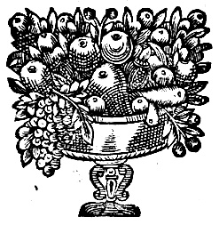
[12] In Trapobane sericum, sine cultu, ex arboribus detrahitur à Bombycibus confectum. Linschot cap. 23. in commentar nauigationum.
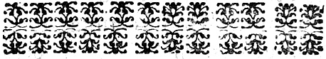
CONTEM O MODO DE criar os bichos, até tirar a seda.
Do lugar proprio para criar os bichos.
Para fazer hũa copiosa criação de bichos de seda, se deue preparar hum lugar cõmodo, em que se alimentẽ[Pg 132] sete semanas, que tem de vida, ao menos nos vltimos trinta dias, porque nos primeiros, se podem criar em lugares mais estreitos, & em quaesquer camaras, a que não fazem nenhum genero de dano, como não sejão sotaõs, ou lugares humidos, mas em camaras claras, & liures ao vento.
Conuem que as camaras, se for possiuel, tenhão janellas hũas defronte das outras, algũas ao meyo dia, porque nos dias calmosos entre o ar liuremente, mas tambem que tenhão vidraças, ou encerados porque nos dias tempestuosos, & frios estejaõ abrigados.
[Pg 133]
He necessario, que não haja nenhum mao cheiro, & he preciso cerrar todos os buracos de ratos, & impedir, que não entrem na camara, galinhas, frangos, ou pardais.
Na camara destinada a esta criação, se armaràm junto das paredes, partileiros da altura, que se quizer, segundo a criação que se faz, & nelles se meteràm taboleiros diuididos huns dos outros, meyo palmo, & huns sobre outros em distãcia de hum couado, & pello meyo da caza, se pode tambem armar, deixando espaço entre hũs, & outros, capaz de poder[Pg 134] andar liuremẽte a pessoa, que tiuer cuidado delles, & para poder meter escadas para sobir aos taboleiros mais altos, a lhe meter folhas.
Os taboleiros, tenhão as bordas altas, para impedir, que os bichos nam cayam, & para maior preuẽçam, he conueniente que os taboleiros debaixo sejão maiores, que os primeiros, porque vindo a cahir os bichos do taboleiro alto, fiquem no baixo, & se nam percam.
Os partileiros, sobre que se ham de armar os taboleiros, em altura de quinze pés, podẽ ter seis ordẽs de taboleiros.
[Pg 135]
As pessoas que costumão fazer esta criação todos os annos, fazẽ por hũa sô vez a despeza destes partileiros.
He bom pôr sobre elles, papeis, assim para a conseruaçam, & limpeza delles, como para a facilidade, que com elles se tem em mudar os bichos, quando he necessario; muitos escuzão esta despeza a qual nam he considerauel, & toda a casta de papel serue a este effeito.
As pessoas pobres, a que falta a cõmodidade de caza separada, de partileiros, & taboleiros, fazem a criaçam sobre a mesma caza, como[Pg 136] seja de taboado, dentro de arcas, cestos, alcofas, ou sobre taboas postas de parede a parede, sem outro cuidado mais, que de os guardar a todos os bichos, & passaros, que os comem.
A frequente entrada de gẽte nas cazas, o fogo, & o fumo não lhe fazem dano, o que lhe faz dano, he o grande estrondo de sinos, a vesinhança de officios mecanicos, como Ferradores, Ferreiros, & outros semelhantes, que lhe causaõ o mesmo dano, que os trouoens, pello que serà conueniente de os apartar, o mais que puder ser, destes estrondos, suposto que[Pg 137] sendo nascidos entre elles, lhe naõ fazem dano.
Regras para conhecer, & escolher os melhores graõs, & fazer sahir os bichos.
Os melhores graõs, sam os que vem de Sicilia, do Leuante, & de Hespanha; sam pequenos, pardos escuros, & muito redondos, & para conhecer sesaõ mortos, ou falsificados, se quebrara hum entre as vnhas, & se lãçar[Pg 138] bem de humor luzente, he sinal de bondade.
Os graõs de Piemonte, nam saõ tam bons, como os de Hespanha.
Os de Bolonha saõ iguaes na bondade, pello cuidado, que naquella Cidade se poem, em os tirar, como ordinario trato della.
Os de Messina saõ os que mais se estimaõ em Europa.
Em conhecer os graõs ha algũa difficuldade, porque a semente das borboletas, que se nam jũtarão com os machos, tem a mesma cor, o mesmo pezo, & quebrada lança a mesma humidade, & nam tem seruiço algum, como[Pg 139] tambem a semente feita de borboletas, sahidas de casulos pequenos, cuja seda nam tem a bondade ordinaria.
Para euitar estes inconueniẽtes, he preciso, valerse de correspondencias fieis, nos lugares aonde se compram.
Os primeiros a enganàr, & ser enganados, sam os que fazẽ trato desta mercancia, porque comprão quantidades grandes; o mais seguro he, quando se encontram nouidades boasde bichos, ter cuidado de guardar as sementes, na forma, que se dirà no fim deste Tratado.
[Pg 140]
Nam he necessario guardar, senão a quãtidade, que se pode criar; para hũa onça de graõs, bastaràõ duas, ou tres amoreiras grandes, ou cinco, ou seis pequenas.
Posto que os graõs dos bichos da seda, se animão de si mesmos, logo que o calor da Primauera os aquenta, he conueniente cobrilos, por duas razoens.
Primeira, por anticipar a criação às calmas de Iunho, & antes que as amoras sejam maduras, porque a folha he mais difficil de colher, & as amoras lhe communicaõ demasiada humidade.
A segunda he, porque os bichos[Pg 141] sayam hum mesmo tẽpo, o que he mais facil com calor artificial.
Para euitar este inconueniente, costumão em algũas partes, depois de os benzer nas Igrejas, metelos em bom vinho, o espaço de meyo quarto de hora, & depois lançalos sobre hum linho branco, & polos a enxugar ao Sol, se nam for muito ardente, & ao fogo em distancia proporcionada: o tempo conueniente, he a Lua noua de Abril, mas nas terras quentes, aõde a folha se anticipa, a regra principal he, quando as amoreiras tiuerem folhas capazes de se colherem.
[Pg 142]
Depois que os graõs estiuerem secos, se meteràõ em hũa caixa bẽ cerrada, & limpa, com algodam pellas extremidades, & em que sô caiba a quãtidade dos graõs, que se quizerem cobrir, & se porâ a caixa abrigada, & aonde haja fogo se for em terra, & tempo frio, & nella se meterà a caixa em hũ cubertor de papa, ou de pano, & estando desta sorte dous, ou tres dias, se verà que os bichos começão a se animar, & mouer sobreo algodaõ, o que visto, se meterà sobre a boceta, hũa folha de papel branco com buracos, por onde possaõ caber os bichos, & sobre[Pg 143] ella folhas de amoreiras, até que os bichos subaõ, & se peguem nas folhas.
Tanto que as folhas estiuerem cubertas dos bichos, que naturalmente sobem, & se pegam nellas, se tiraràõ com as folhas, & se passaràm aos taboleiros, aonde se ha de continuar a criaçaõ delles.
Esta preuençam de fogo, & vinho, se escuza nas terras quentes, aonde basta a das caixas cubertas em cazas abrigadas.
[Pg 144]
Das mudas dos bichos, & como conuem tratalos no tempo dellas.
Os bichos mudão quatro vezes desde o nacimento, até formarẽ os casulos; em cada hũa destas mudas, dormem o espaço de tres, ou quatro dias, & saõ como immoueis, ou doentes, & não comem até mudar as pelles, o que se conhece, quando parecem mais brancos, & mais curtos do que erão.
[Pg 145]
Depois que mudão, comem outo dias, até tornar a segunda muda, & assim até a quarta, em que chegaõ a toda a sua grandeza, que he a grossura, como de hũa pena de pato, & o comprimento de duas polegadas.
Acabadas as mudas, nam ha regra a guardar, para os mudar de cama ou lhe dar de comer, porque hũa, & outra cousa se deue fazer sempre que tiuerem necessidade.
A ordem, he passalos dos taboleiros, em que estam, a outros taboleiros naõ muito juntos huns dos outros, & darlhes a comer folhas[Pg 146] frescas, & limpas de todo o pô, colhidas ao Sol, porque nam tenham orualho, metendo sempre folhas nos lugares vazios, & junto aos bichos, por euitar que se nam juntem huns com os outros o que não he danoso nos primeiros dias.
O modo de os mudar dos taboleiros, he com as folhas, em que estão pegados, hum quarto de hora, depois que estão pegados nellas, & no mesmo tempo meter folhas frescas no lugar donde os tiram, para os bichos, que ficam, porque estas mudanças se fazem para lhe dar mais espaço, quando crecem.
[Pg 147]
Os mais curiosos tem agulhas grossas de prata, ou latam, para os hir mudando, em quanto ha perigo, de os mudar com os dedos.
Tres, ou quatro dias depois de animados, conuem mudalos, & que a caza nam esteja exposta a ventos frios; & nas terras frias, se fazem secar os taboleiros ao fogo, para lhe tirar a humidade, & depois de cinco, ou seis dias, os tornam a mudar.
Quando os bichos sam grandes, naõ ha perigo de os mudar, & tocar cõ os dedos, nẽ de os expor, & costumar ao ar, em bons dias.
[Pg 148]
As pessoas, que nam tem tempo & cõmodidade de mudar os bichos de lugar, & os separar antes que se mudem, he necessario separalos, & mudalos nas mudas, & obseruar com cuidado, quando sahem dellas, para os hir separando, & darlhe de comer logo, porque sahem com apetite, duas vezes no dia, quãdo sahem da primeira muda; quando da segunda, o mesmo; tres vezes no dia se lhe darà de comer, quando sahem da terceira muda, & quãdo da quarta, todas as vezes, que se virem as folhas pella maior parte comidas, porque lhe he danoso estarem sepaço[Pg 149] considerauel sem comer, quando estão chegados ao tempo de subir, & para este tempo lhe guardaràm as amoreiras melhores, que tenhaõ as folhas mais fortes, porque lhe faz fazer a seda mais forte.
Deue obseruarse, que algumas amoreiras, antes do S Ioam, produzem segunda ordem de folhas, que sam muito tenras, & humidas, & naõ conuem dar destas aos bichos, porque a demasiada substancia, que lhes daõ, os faz entropecer, estando chegados a subir.
A melhor preuençam cõtra este[Pg 150] dano, he começalos a criar com abundancia de boa folha, porque faràm a seda em seis semanas, ou quarenta & cinco dias.
Modo de colher, & conseruar as folhas das amoreiras.
As folhas das amoreiras, se deuem colher depois do Sol secar o orualho, ou a agoa de chuua, em tempo chuuoso, porque aos bichos da seda, nenhũa cousa[Pg 151] lhe faz maior dano, que folhas molhadas do orualho, ou da chuua.
A folha guardada doze, ou quinze horas, & até dous dias, he melhor para os bichos, do que se se lhe der logo, depois de tirada da aruore, & recen-colhida. E se não ouuer outra folha, que lhe dar, mais que a que se colher em tẽpo de chuua, melhor he fazelos jejuar, que darlhe folha molhada, & he preciso esperar, que se seque, & para este effeito, poràm a folha entre dous lançois, ou entre dous panos de linho, depois de secos ao lume, & os sacudiràm para[Pg 152] fazer correr a agoa das folhas, que tambem por este modo se secaràm mais da depressa, com o vento que tomão nesta agitaçam; & depois de sacudidas as estenderàõ sobre camas, ou panos, para que acabem de se secar de todo.
Quãdo se vé, que tẽpo ameaça chuua, conuem fazer hũa boa prouisaõ de folha, para dous, ou tres dias, que he o tempo, que se pode guardar, se estiuer em lugar fresco, em que corra o ar, & he preciso mouela muitas vezes no dia, porque as folhas amontoadas hũas sobre as outras, se esquentaõ, & ficam humidas, & molhadas,[Pg 153] como as que se colhem com orvalho, ou chuua, & porque esta sua humidade faz muito mal aos bichos nam podem servir, senam depois de enxutas; entre tanto, se os bichos necessitarem de folha, se lhe reuolueràm as camas, & elles acharàm que roer nas folhas, que tem debaixo de si.
A folha das aruores situadas em lugares humidos, & sombrios, aonde nam chegam os rayos do Sol, faz mal aos bichos, como tambem as folhas amarellas, ou manchadas de pardo escuro, como lentilhas; & naõ saõ menos danosos aos bichos, os renouos,[Pg 154] que brotaõ do tronco da amoreira, ou dos ramos mais grossos do mesmo anno.
Conuem, que os que colhem a folha, tenhaõ as maõs limpas, que nam cheirem a cebollas, nẽ alhos, que antes de a hir colher nam tomem tabaco de fumo, & que naõ quebrem os ramos, quando a colhem.
Naõ colheràõ as folhas, às mãos cheas, mas folha por folha (se for possiuel,) porque assim conuem para as amoreiras, & para os bichos; para as amoreiras, porque nam se arrancarâm os renouos do anno; & para os bichos, porque[Pg 155] as folhas se colherám inteiras, & nam tomaràm o mao sabor dos ramos, com que se roção, quando se apanhão com violencia.
Em conclusaõ, poràõ as folhas em sacos, ou em cestos muito limpos, & nam as apertaràm muito, porque apertadas se quebraõ facilmente, & em menos de meya hora se esquentam, & ficam molhadas, como se foraõ tomadas da aruore, em tempo de chuva, ou com orvalho.
[Pg 156]
Das doenças dos bichos da seda, & dos remedios, que se lhe podem aplicar.
Os bichos estam sogeitos a dous generos de doenças, hũas naturaes, & outras accidentaes.
As naturaes, saõ as quatro mudas, que fazem até o tempo, em que começaõ a fazera seda; em cada muda, deixam a pelle, estam tres, ou quatro dias sem comer, ficam[Pg 157] sem mouimento, & como adormecidos, & se apartaõ huns dos outros, quanto podem; & estas mudas, ainda que naturaes, sam causa de algũa quebra nos bichos.
As suas doenças accidentaes saõ causadas do rigor dos tempos; da mà calidade da folha; da pouco sadia situaçaõ do lugar, em que se criaõ; do mao trato, que se lhe dà; & do mao cheiro, que os offende.
Em quanto ao rigor do tempo, a calma lhe faz mais mal, que o frio.
Quando se leuanta algum vento[Pg 158] frio, & desabrido, conuem ter a caza bem fechada, & no meyo della alguns fogareiros, com brazas acezas, & naõ caruoens, & cerrar todas as portas, & janellas por onde pode entrar o vento.
Ao excesso da calma, se remedearà com abrir todas as portas, & janellas, para os refrescar, & cõ lhe mudar muitas vezes as camas, porque lhe causaõ muito calor.
Se tal-vez deixarem de comer, ou se as folhas, que se lhe deram de hum pasto a outro, naõ forem comidas, não se lhe deue dar outras, & bom serà mudalos do taboleiro, ou partileiro em que[Pg 159] estam, & darlhe nouas folhas, & não lhe pór outras, até que não sejão bem comidas.
E se não estiuerem em estado, que se possa bolir nelles, como quando estão na muda, em que não comem, por adormecidos, ou doentes, pouca folha se lhe deue dar, ou nenhũa, até naõ acabarem de roer a que se lhe deu, & bom he deixalos neste estado, sem lhe fazer mouimento algum, até que elles mesmos acordẽ do letargo, & madorna, em que estão.
Se os bichos não medrarem, & se muitos delles morrerem, bom ser à mudar lhe as camas, & perfumar[Pg 160] os partileiros, & se ouuer lugar, melhor serà, mudalos para outra caza, & com particular cuidado, hir sẽpre apartando os doẽtes, darlhe a melhor folha, mas pouca, & mais a meudo, do que se costumaua, para os espertar, & naõ lhe dar folha, se não tiuerem comido a que tem debaixo de si, perfumalos cõ encenso, beijuim, & outros cheiros, & heruas cheirosas do campo, ou com o fumo de toucinho magro, presuntos, & chouriços fritos, ou postos sobre as brazas.
Tambem os perfumaràm pondo no lume hum ferro, & hum calhao,[Pg 161] & apagando-o com vinho, ou vinagre, ou maluasia: Estes fumos, & vapores, despertam, alegrão, & sarão aos bichos.
Por esta mesma razam, bom serà borrifar algũas vezes a caza, em que os bichos estiuerem, as paredes, & os taboleiros, com vinho, ou vinagre, & esfregar tudo com eruas, & folhas de aruores, de bõ cheiro, como funcho, alecrim, louro, & outras semelhãtes, principalmente se estiuerem doentes, & se morrerem muitos, porque de outra sorte, estes cheiros seriam inuteis, & poderiam prejudicar, por serem fortes.
[Pg 162]
O bafo, dos que tiuerem comido alhos, cebollas, ou porros, ou dos que mastigam, & tomão tabaco de fumo, he danoso aos bichos, quãdo estão saõs, & muito mais, quãdo estão doentes, & por isso estes taes nam os tocaràm, nem bolirâm com as folhas, nem quem andar com sal.
As moças, & mulheres, que andarem com suas menstruas purgaçoens, nam boliràm nos bichos, nem entraràm nas cazas, em que estiuerem, em quanto lhe durar este achaque, porque isto os mata.
He necessario que nas cazas, em que esta criação se fizer, haja muita[Pg 163] quietação, & que seja em parte donde não se oução de perto tiros de armas de fogo, nem sons de sinos, tambores, ou trombetas, & sobre tudo não se dem pancadas grandes na caza donde estiuerem, deixando cahir algũa cousa de pezo, arrastrando bofetes, & cadeiras, ou outras cousas, que abalaõ os sobrados, porque qualquer destes estrondos, lhes causa doenças nas mudas.
Em quanto os bichos começarem a fiar, & tecer a sua seda & a formar o seu casulo, naõ façaõ bolir os estrados, ou partileiros, em que estiuerem por ser este o tẽpo[Pg 164] da força do seu trabalho, em que começaõ a encolher o corpo, & as pernas, & qualquer mouimẽto, que lhe occasionarẽ, lhe faz quebrar o fio da seda, com que tecẽ o casulo, & depois andaõ buscando o fio em quãto o naõ achaõ, passa o tempo de tecer, & se reduzem â figura de hũa faua, & a maior parte rebentaõ nos casulos, que depois ficaõ molles, & naõ daõ a seda, que hauiaõ de dar, se naõ desinquietàraõ os bichos.
Das grandes chuuas com trouoens, que sobreuem, quando os bichos saõ crecidos, se lhe origina a maior parte das doenças, das[Pg 165] quaes os poderà liurar o cuidado, que se terà delles.
As chuuas, sô lhe saõ danosas, pella grande humidade, que lhes causa ou pella difficuldade de ter boa folha.
Esta humidade se pode remediar cõ fogareiros de brazas acezas, & nam de caruoens, como fica declarado, & as folhas se poderàõ secar na forma, que tenho dito.
Pello que toca aos trouoens, em algum modo se pode euitar o dano, que fazem aos bichos, perfumando os com o cheiro de talhadas de presumto, ou chouriço fritos,[Pg 166] ou postos sobre as brazas, & fazendo entrar na caza, em que se criaõ, muitas pessoas, que farâm algum leue rumor, & poderàm reuoluer os bichos, em quanto durarem os trouoens, isto os aliuia muito, & o estrondo dos trouoens nam os apanha com tam grande sobresalto.
Sinaes das doenças, são quando se fazẽ amarellos, quando inchaõ, quando sam luzidios, ou quando tem nodoas, como de pisaduras, & quando se achão molhados por baixo com humidade amarella, & he necessario separar os doentes dos saõs, & logo lançar fora os[Pg 167] que se acharem com esta humidade, a estes bichos, chama o vulgo, Porcas; tem as pernas mui inchadas, & negras nas estremidades, & as nodoas do corpo auultam mais, & sam differentes das dos outros bichos, & hũ dia, ou dous, antes que este humor delles distille, sam muito molles da barriga, & das pernas, & suposto que se lhe pode dar algum aliuio, apartando os dos mais, antes que a inchação seja grande, & vzãdo dos remedios acima declarados, porque assim escapariam alguns; mais acertado he deitalos às gallinhas, do que gastar o tempo em os currar,[Pg 168] borrifando os, & passando os pello vinagre, ou por outras agoas que os Authores apontão; & em todo o cazo, he absolutamente preciso, separalos dos saõs, antes que a agoa, que distillam, lhes saya da barriga, para que os mais se nam molhem, & que as folhas, a que a agoa chegar, nam tomem o mao gosto daquella humidade, que he todo o mal, que pode fazer aos bichos, por quanto esta enfermidade nam se communica, porque nam he contagiosa.
Tambem se deuem pôr de parte, os que de ordinario andão pellas[Pg 169] bordas dos taboleiros, ainda que nam estejaõ em termos de fazer muda porque a penas podem chegar à quarta muda sem rebentarem por grande cuidado, que se tenha delles, & a causa porque chegam a viuer tanto, he o muito ar, que tomaõ, andando pellas estremidades dos taboleiros.
Eu para mim entẽdo, que a doença dos bichos, he incurauel, & para elles serem de algum proueito, os deitaràõ às galinhas, & para suprir a falta destes bichos inuteis, he forçoso, preuenirse cõ alguma semente mais, para que a criaçam se faça com a desejada[Pg 170] quantidade; meia onça de mais, em dezouto, ou vinte onças, bastarà.
Os que nunca criàram bichos, se poderàõ facilmente enganar, imaginando que alguns bichos, que naturalmente sam pardos, & escuros, tem a mesma doença, que os a que chamão porcas, mas esta casta de bichos, he a melhor de todas, & ha muitos delles nos graõs, que vem de Hespanha.
Quando perfumarẽ os bichos, tomaràõ sentido, que entre os perfumes, nam haja certas eruas, sementes, & cascas, que fazem hum cheiro muito danoso aos bichos,[Pg 171] como faz o fumo de couros queimados, de sedas de porco, cabelos, & pelos de outros animaes, porque tudo isto, para os bichos, he peçonha.
Passo em silencio muitas outras cousas venenosas para os bichos, para nam dar noticias de hũ mal, que os mal intencionados poderàõ fazer, em dano dos que fazem esta criaçam, porque he tam grande a malicia de alguns, que de proposito vam borrifar de noite as folhas nas mesmas amoreiras, com certas agoas, que empeçonhentão os bichos & vem a ser esta malicia tam refinada, como a[Pg 172] dos que vendem as sementes assadas no forno, ou lauadas cõ agoa feruente, com a qual misturão algũa boa para que se entenda, que se nam sahe toda à luz, he falta dos que fazem a criação, & nam dos que vendem a semente.
Isto pratica a gente de hũ Reyno para outro, & isto muitas vezes se experimentou na semente, que se mandou para França, sô a fim de que naquelle Reyno nam houuesse abundancia de sedas, & forçosamente se seruissem das das outras Naçoens.
Por isso ensinarei no seguinte Capitulo, o modo com que neste[Pg 173] Reyno poderà hauer daqui em diante, tão boa semente, como nos Reynos estrangeiros, para que possamos escuzar a sua, & juntamente as sedas, que nos vem de fora.
Segredo para fazer nascer muitos bichos da seda, sem semente, que daràm excellẽtes graõs com abũdancia.
Nas terràs, em que nam ha semente algũa dos bichos[Pg 174] da seda, suprirà a Arte esta falta, com hũa prodigiosa metamorphosi, de que fallão muitos Authores, & que de ordinario se experimenta em muitas partes do Oriente.
No tempo da Primauera, quinze dias depois de começar a sahir a folha das amoreiras, tomaràm hũa vacca prenhe, & antes d’ella parir, vinte dias arreo, a sustentaràm com folhas de amoreira, nam lhe dando erua, nem feno, nem algum outro genero de alimento, nem tam pouco lhe daràm de beber, & depois de nascida a vitella, continuaràm outros outo dias,[Pg 175] dar à vacca folhas de amoreira.
Depois disto, mataràm a vitella no tempo em que estiuer farta do leite da mãy, & a cortaràm em pedaços, até as patas dos pés, & das mãos, que deitaràm fora, & não tiraràm nada das mais partes do corpo, mas ajuntaràm tudo, a carne, o sangue, os ossos, a pelle; & as tripas, em hũa gamela de pao, & a porâm no mais alto sobrado da caza, para se nam sinta o fedor.
Toda esta mestura de carnes, ossos, & sangue, se corromperà, & desta corrupção naceràm hũs bichinhos, que se recolheràm com[Pg 176] folhas de amoreira, em que naturalmente se pegão, & passados aos taboleiros, se criaràm na mesma forma, que os outros, até fazerem os seus casulos, dos quaes sahirâm borboletas, que ajuntandose, poràm graõs muito melhores, que os dos outros bichos.
Mas porque esta semente perde com o tẽpo a sua virtude, he opinião de alguns, que só pose seruir outo, ou dez annos, no cabo dos quaes, serà preciso renouar esta mesma producção, ou transformação cõ o sangue, carne, & ossos da vitella, como fica declarado.
Esta experiencia se pode fazer[Pg 177] com muita facilidade, & cõ pouca despeza, & serà de grànde vtilidade, para os que a fizerem.
O insigne Poeta Ieronimo Vida, Cremonẽse, Bispo de Alba descreue esta marauilhosa obra da arte, & da natureza, no seu segundo Liuro de Bombice.
Eis aqui os versos do Author,[13] para satisfação dos curiosos.
Sicut Apes teneri reparantur cæde Iuuenci,
Hîc super accedit tantum labor; ante Iuuencus
Bis denosque dies, bis denasque ordine noctes
Graminis arcendus pastu, prohibendus ab vndis;
Interea stabulis tantum illi pinguia mori
Sufficiunt folia, & lactenti cortice ramos.
Viscera vbi cæsi fuerunt liquefacta, videbis
Bombicem fractis condensam erumpere costis,
Atque globos toto tinearum efferuere tergo,
Et veluti putres passim concrescere fungos.
[Pg 178]
Modo para fazer sobir, & tecer os bichos da seda.
O Fazer a sede, he tam natural aos bichos, que apenas sahem da semente, quando começam a deitar do estamago hum fiosinho de seda, & se bem repararmos, veremos as casquinhas da semente pegadas hũa com outra, com hũas sedinhas quasi imperceptiueis, & as folhas que se deixaõ sobre a semente, & o papel furado,[Pg 179] para obrigar os bichos a sahir, tambem ficam pegadas pella tecidura dos raminhos da seda, que os bichos deixaram.
Por onde consta, que em quanto, viuem, sempre tem este fio de seda aparelhado para se pegarem, quãdo querem, porque ainda que depois de sobidos, se deixem cahir, sempre lhes fica a ponta da seda na boca, para tornarem a pegar, assim como fazem as aranhas.
De maneira, que tanto que chegar o tempo destinado para os bichos fazerem a seda, elles mesmos, em achando lugar proporcionado para se agasalharem, começaràõ[Pg 180] a fazer o seu casulo, sem arte algũa, ou industria dos que tem cuidado de os criar.
Pouco mais, ou menos de doze dias depois da quarta muda, se achaõ em estado de dar principio à sua obra, o que se pode facilmẽte conhecer, por estes sinaes.
Primeiro, o corpo se lhe faz mais claro, & quasi transparente como hum Alambre, como se verà, tomando-os na mão, & pondo os à luz do Sol de dia, ou ao lume da candea de noite.
Segundo, os circulos, que tem à roda do corpo, passaõ de hũa côr verde, a hũa côr de ouro, em[Pg 181] que se representa a seda, que elles tem no esta mago.
Terceiro, o bico da boca, se lhe faz mais agudo.
Quarto, andaõ de hũa parte, & outra, por meyo dos outros, sem se lhe dar de comer, & leuãtando a cabecinha, dão mostras de querer hir à lenha, & fiar a sua seda.
Primeiro que os bichos cheguẽ a esta madureza, & perfeição, he precizo ter nos partileiros as casinhas, ou cabanas armadas, com ramos dobrados, a modo de arco, os quaes seràõ de giesta, ou louro, vide, medronho, vime, feto, ou[Pg 182] de outras plantas, ou heruas, que não tenhão humidade algũa nem espinhos, que possaõ offender os bichos, quando sobem, ou quando cahem.
Em cada casinha poràõ a quantidade dos bichos, que parecer cõforme à capacidade do lugar, & os estenderàõ sobre folhas de papel muito limpas, no plano da mesma casinha.
Desde entaõ começaràm a lhe dar pouco de comer, mas boas folhas, & muitas vezes, de dia, & de noite, & jà naõ teram mais o cuidado de os alimpar, nem de os mudar.
[Pg 183]
Mas sô lhe abriram as portas, & janellas nos dias de calma para os refrescar, & se se leuãtar algum vento frio, & desabrido, as tornaram a fechar para os defender das asperezas do tempo.
Tres dias depois, que os bichos tiuerem principiado o seu casulo, se a maior parte delles estiuer trabalhando na lenha, & se ficarem muito poucos no chaõ da casinha, tomaràõ estes poucos, guardandose de abalar as casinhas, os tirarâõ juntamente com suas camas, & com o papel, deixando as taboas limpas, & os poram em outra casinha vazia sobre outro[Pg 184] papel nouo, & limpo, & lhe daram outras folhas frescas como d’antes.
Esta limpeza das casinhas tres, ou quatro dias, depois de sobir a maior parte dos bichos, he muito necessaria, porque a folha, que cõtinuamente se poem para sustento dos que ficaõ em baixo, faz as camas maiores, & o mao cheiro, que dellas sahe, offende os bichos.
Além de que sempre arrebentão alguns nas camas, cuja podridão exhala vapores mui danosos aos bichos, principalmẽte naquelle tempo, em que necessitam de ar fresco, & liure de toda a corrupção.
[Pg 185]
Em quanto aos bichos preguiçosos, que tardão em sobir, depois de passados a outra cabana, se lhe diminuirà o comer pello espaço de cinco, ou seis dias, & quando se encolherem, & se fizerem vermelhos, os porâm em papeliços, para os ajudar a fiar.
E se nam houuer tempo, ou se nam tiuerem paciencia para fazer a quantidade de papeliços, que basta os porâm todos sobre hum montão de cauacos de vime, ou de outros pedacinhos, & fragmẽtos da lenha, de que se compuzeram as cabanas, aduertindo que nam serue guardar os casulos desta[Pg 186] casta de bichos, para fazer semente, porque os que della sahirem, teràm a mesma falta, & quasi todos seràm curtos, & pequenos.
Do tempo, em que os casulos se hão de tirar da lenha.
No primeiro dia, que o bicho começa a fiar, forma a sua anafaya, que he como hũa tea de aranha, no segundo começa o seu casulo, & se cobre quasi todo de seda; no terceiro, não se vé jà, &[Pg 187] nos seguintes, vai espessando a sua obra, sem nũca quebrar o fio, que he tão delgado, & juntamente tão comprido, que nam he hyperbole dizer, que com hum destes fios, se pode cingir hũa grande Cidade, porque tem quasi duas legoas de comprimento.
Suposto isto, depois de outo, ou dez dias, tiraràõ cõ destreza os casulos da lenha, & os guardaràõ em cestos, ou alcofas; daràõ algũ tẽpo mais aos vagarosos, mas tambem não esperaràõ, que os que foram mais diligentes na tecidura do seu casulo, o cheguem a furar, porque feria hũa grande perda, para os que os criarão.
[Pg 188]
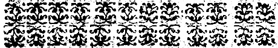
Como se deuem aparelhar os casulos, para delles tirar a seda, & conserualos muito tempo, & impedir que as borboletas nam os furẽ.
Se os que criaram os bichos, por falta de fiandeiras, ou pella grande abũdancia da nouidade, nam tiuerem[Pg 189] tempo, nem commodo, para tirar a seda dos casulos, quatro, ou cinco dias, depois que os casulos forẽ tirados dos ramos, poràm os casulos ao Sol, desde o meio dia até as quatro horas da tarde, tornando-os a pór, & tirar tres dias, sẽpre nas mesmas horas, & por este modo os ardores do Sol, affogaràm os bichos nos seus casulos.
Tambem poderàm pôr em parte separada dos casulos, algumas mantas, ao maior calor do Sol, quatro ou cinco horas ao menos, & nestas mesmas mantas, & cobertores muito quentes, recolherâm[Pg 190] os casulos, & os cobriràm, porque com este calor abafadiço, os bichos morrerâm mais depressa.
Depois disto, os casulos se poderàõ guardar muito tempo, & ouue quem os guardou mais de cinco annos, ficando a seda tam boa, como a que fora tirada quinze dias, depois de acabada a criaçaõ; verdade he que nam parece tam lustrosa nas meadas, mas depois de tinta, & aparelhada, tem a mesma bõdade, & perfeiçaõ que a outra, porque no casulo, o bicho transformado em faua, se seca, & se mirra de maneira, que naõ tem,[Pg 191] nem toma mais humidade algũa, com que possa fazer dano â seda.
Em tempo pois chuuoso, ou cheo de neuoas, se farâ com o calor do forno o que se hauia de fazer com o calor do Sol.
Porâm os casulos em cestos, alcofas, ou sacos velhos, dentro de hum forno mediocremente quẽte, como quando se tira o pão depois de cozido, & se quatro, ou cinco horas de Sol, eram precisas para fazer morrer os bichos, para este mesmo effeito, bastarà hum quarto de hora do calor do forno muito bem tapado, & chegando os ouuidos â boca do forno, ouuirâm[Pg 192] estalar os bichos, & ranger nos seus casulos, como formigas lançadas em cinzas quentes, & logo immediatamente tirarâm os casulos do forno, & os enuoluerâm em cobertores muito quentes, & este calor os acabarâ de matar a todos, porque se ficarem os casulos ao ar descoberto, muitos dos bichos tornaram a viuer, & furaram os casulos.
Depois disto, estenderam os casulos sobre taboas ao ar, ou ao Sol, para os secar, & endurecer, porque alguns delles ficão fofos, em razam da humidade que lhe cõmunicaram os bichos, que estalãdo[Pg 193] dentro delles por força do calor, deixaõ ir de si huma agoa, ou humor, com que fica embebida a seda, & assim postos ao Sol, ou ao Ar, os reuolueraõ muitas vezes cada dia, para que tornem a recuperar a sua primeira tesura.
Primeiro que metaõ os casulos no forno, tiraraõ o barbilho, que està a roda delles, como os dedos, sem lhe chegar com as vnhas, & para preseruar os casulos mais altos, do calor do forno, que os poderia torrar, poraõ hum panno de linho, ou folhas de papel sobre os cestos ou alcofas, & naõ amontoaraõ os cazulos em cantidade nem[Pg 194] os apertaraõ nos cestos, paraque todos igualmente sintaõ os effeitos do calor, que he preciso, para a extinçaõ dos bichos.
Como se deuem escolher os casulos, & vnir as borboletas paraque ponham a semente.
Escolheraõ os casulos mais tesos, & mais corados, porque as borboletas, que delles sahem poem a melhor semente; naõ importa, de que cor sejaõ os casulos,[Pg 195] com tanto que a cor seja viua & sobida, porem os de cor de verdemar saõ os melhores.
Para fazer huma onça de semẽte, ha mister cem pares de casulos, cem casulos de borboletas machos, & outros cem de borboletas femeas.
Quando apartarem os casulos para a semente aduirtiraõ, que em cada casulo o bicho se moua, solto, & desapegado, o que conheceraõ sacudindo brandamente o casulo, junto dos ouuidos, porque se o bicho naõ bolir, serà sinal, que està podre, & pegado à seda, & neste estado naõ serue para o[Pg 196] nosso intento.
Os casulos dos machos, naõ tẽ a seda taõ liza, como a das femeas, saõ cumpridinhos, & agudos por ambas as extremidades do ouado.
Os casulos das femeas tem a seda mais lisa, & saõ mais redondos por huma parte, que por outra, como hum ouo de galinha, & a maior parte são rombos por ambas as partes.
Por estes sinaes, differenciarão os casulos huns dos outros, & porão de parte os dos machos, & das femeas em igual cantidade; & se acontecer, que sahião mais femeas que machos, naõ serà taõ grande[Pg 197] a perda, como se succedérà o contrario, porque huma borboleta macho, pode seruir para duas borboletas femeas, suposto que não serà tão boa a semente, como a do que sò se vnir com huma.
Enfiaraõ todos os casulos com huma agulha, & não furarão de todo a seda, mas sò a superficie della, & farão como contas ou coroas de cem casulos cada huma, & as pendurarão, sem bolir mais nellas, esperãdo que os bichos sahião trãsformados em borboletas.
As femeas seram muito mais aluas, que os machos, & terão o ventre tres vezes maior.
[Pg 198]
Os machos se darão a conhecer logo em rompendo do casulo, porque baterào as azas, cõ muita pressa, & esperteza, o que as femeas não fazem.
Tomarão as borboletas pellas azas, ou pello corpo com os dedos cõ delicadeza, sem os apertar, & os porão sobre folhas de papel, ou sobre estamenhas velhas & outros panos, que não tem pelo, & talvez serâ necessario chegar as borboletas humas âs outras, & como as virem vnidas, as deixarão assim desde a manhaã, a té a noite, depois apartaram os machos, & os deitarão, & as femeas[Pg 199] porão a semente.
Esta vnião das borboletas ha de durar noue ou dez horas, quer de dia, quer de noite, & não mais, porque a demaziada dilação desta vnião, prejudicaria à perfeição, & multiplicação da semente.
Farão muita diligencia, por não fazer arrebentar os grãos, quãdo os tirarem do pano, ou papel, em que as borboletas os lançarão, & para os tirar nam se valeram de ferros, ou outros instrumẽtos, que cortão, mas sò vzarão de alguns pedacinhos de ouro, ou prata adelgaçados, & sem talho, & se os vintens del Rey D. Manoel forão[Pg 200] hum pouco mayores, seriaõ muito bonspara este effeito.
Quando os grãos sahẽ da borboleta, são brancos, no mesmo dia se fazem como verdes, & depois vermelhos, & pouco a pouco vão tomando huma cor de pardo escuro, que sempre conseruão, & esta vltima cor he o sinal da mais perfeita semente; alguns grãos se achão, que sempre ficão brancos, & estes não prestão para nada.
De ordinario cada borboleta femea lança trezentos grãos, hũas lanção mais, & outros menos, porque muitas não podem lancar todos os que tem dentro de si, &[Pg 201] com elles morrem.
Guardaraõ os graõs de todo o genero de bichos, ratos, formigas, grillos, & osteraõ em lugares, a que naõ possaõ chegar galinhas, nem aues, porque saõ mais golosas dos grãos dos bichos da seda, do que dos mesmos bichos viuos.
Porão os graõs dentro de hũa arca ou contador, em caxas bem fechadas, & enuoluidas em panos de lãa ou linho, que naõ tenhaõ humidade, alguma; & as teraõ em lugares izẽtos dos rigores do calor, & do frio.
Por esta razão, não os guardaràm[Pg 202] junto das cheminés, em que de ordinario se acende o lume, nem junto das janellas expostas âs inclemencias dos ares, nem em outros lugares frios, & humidos, mas temperados, porque o calor faz nacer os bichos antes do tẽpo, o frio congela os grãos, & a humidade os corrompe.
Com estas precauçoẽs nacerão os bichos a seu tempo, & se conseruarão os grãos de ãno em ãno, seraõ mais copiosas as nouidades, & se perpetuarà em huma casa esta rica semente.
Mas he precioso renouar a semente de tres em tres annos, misturandoa[Pg 203] com outros graõs vindos de fora, ou com os que se colherem de huma vitella morta, na forma, que fica declarado no Capitulo 6. da 2. parte porque a semente renouada torna a cobrar a virtude, & actiuidade, que se lhe vai diminuindo com o tẽpo, que tudo gasta, & tudo acaba.
Da forma do forno, dobadoura, & outros instrumẽtos para a tirar a seda.
Em tirar a seda do casulo, & passala a meadas com huma[Pg 204] roda, ou dobadoura, & hũ tacho de agoa quente, jà saõ as camponezas rusticas de Tras-os-montes, taõ peritas, que facilmente podem ensinar esta arte às mais prouincias do Reyno.
Mas porque semelhantes exercicios melhor se aprendem com a vista, & experiencia, do que cõ a liçaõ, & discurso, tratarei com breuidade esta materia, apontãdo só alguns particulares, para aliuiar o trabalho, & apurar a industria das fiandeiras.
O forno se ha de fazer em lugar abrigado da chuua, & do vento, & o tacho nam ha de ser muito[Pg 205] profundo, nem muito largo.
A portinha, por onde sa ha de por a lenha no forno, se farà dez polegadas mais abaixo do fundo do tacho, & afastada delle hum palmo, paraque o fumo se perca & se consuma no forno ao redor do fundo do tacho.
Os cazulos se poraõ na agoa hum pouco antes, que comece a feruer, porque na agoa fria, a goma dos casulos se dissolue, & o mesmo succede, quando està feruendo.
Ajũtarà á fiandeira dez ou doze fios, cõforme a seda houuer de ser fina, ou forte; para a fitaria, a[Pg 206] seda deue ser muito delgada, & outo fios bastaõ, mas para os panos, & veludos, se deuem ajuntar doze fios ao menos.
Fiarà com a mayor presteza que for possiuel, porque quanto menos estaõ os casulos na agoa, sahe a seda com mayor lustre, & em mayor cantidade.
Do Barbilho, & do modo de o aparelhar.
O Barbilho, propriamẽte falãdo, he a quella primeira seda,[Pg 207] a que chamaõ anafaya, que os bichos fiaõ primeiro que comecem a tecer o seu casulo.
Porem de baixo desta palaura, barbilho, se entende toda a seda, que se tira com os dedos do redor dos casulos, quando se daõ a fiar, & juntamente todos os casulos furados pellos bichos, & todos os desperdiços da seda, que a fiãdeira naõ pode inteiramente tirar.
Este genero de seda, naõ pode ser fiado em meadas na dobadoura, mas he preciso cardalo, & depois tiralo na roda, cu na roca, & para este effeito, faraõ primeiro o que se segue.
[Pg 208]
Ajuntaraõ todas estas reliquias, & sobejos da seda, tiraraõ della os bichos que acharem, & a limparão de toda a immundicia, & depois a meterão em molho em agoa clara, dentro de hum alquidar, ou em qualquer outro vazo de barro, ou cobre, pelo espaço de tres, ou quarto dias; cada dia mudaràm a agoa para que nam se corrompa, & que o barbilho se faça mais aluo.
Nesta agoa os casulos se faràm mais moles, & se dissoluerà a goma, que os bichos communicàram aos casulos, quando os tecéram.
[Pg 209]
Depois poràm tudo junto a feruer dentro de hũa caldeira, em barella clara, passada por hum pano, & purgada das cinzas, com que foi feita.
Ferueràm os casulos meya hora, & depois de desfeita a goma, que os faz tam tesos, como pergaminho, os lauarâm com agoa clara, & as molheres os fiaràm com o fuso, ou com a roda, mas primeiro os faràm cardar, para os fiar com mais facilidade.
Com este fio de barbilho muito delgadamente fiado, se podem tecer panos tam finos, como os que se fazem com a seda, tirada na[Pg 210] dobadoura, outros fazem delle retroz para cozer, dandolhe o lustre.
Finalmente para conclusam desta obra, digamos que nos bichos da seda, tudo he milagroso em quanto viuem, & tudo o que delles fica, depois de mortos, aproueita.
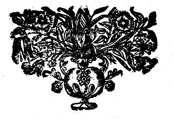
[Pg 211]
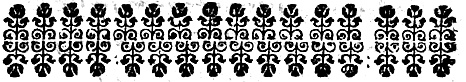
D. D. FERDINANDO
MASCARENIÆ.
Comiti à Turre.
ET
D. D. FRANCISCO
MASCARENIÆ.
Comiti Cocolini.
Hactenus publicæ studui vtilitati, nunc vestræ seruire cupio oblectationi; cũ emim his quisque rebus delectetur, quibus quodam natura ductu incumbit,[Pg 212] quid jucundius afficiat liber ali ingenio juuenes, quam fructus artium liberalium? O pes, auitum stemma, generosus sanguis, & Aulæ oblectamenta, vobis sunt post studia, omnes quippe animi affectus, vni voluistis fieri sapientiæ vectigales. Percurrendo amænioris litteraturæ curriculo, vix Ætas alijs integra sufficit, vestra vobis satis fuit Adolescentia; cum Musis versamini, vt sororibus, cum Apolline loquimini, vt fratre; & dum alter alterum eruditâ contẽtione transcendere studetis, domus vestræ fiunt, domicilia doctrinarũ, scientiarũ Augustalia, & bipartitum[Pg 213] Vlyssiponis Athenæum.
Quibus attentè perspectis, vt aliquid libellus hic complecteretur, quod ad vestrum palatum faceret, perneceßariũ esse arbitratus sum, vt quæ de Mororum cultura, & Bombicum educatione, sparsi in vulgus, plebeio sermone, humilique stylo, eadem vobis nobiliore dicendi charactere depicta sisterem.
Mirabimini prudẽtiam in Moro, in Bombice industriam, & in vtroque, recondita naturæ solerter operantis arcana.
Quid moro sapientius? Arborũ postrema germinat morus, vt fructificet securior, fœtusq; suos haud[Pg 214] euocat in lucem, nisi extorri hyeme, exanimis Aquilonibus, & prouecto jam vere.
Quid industrius Bombice? vno Bombix instrumento, ore scilicet, innatum sericum deducit in fila, carminat in lanugines, contorquet in mæandros, congerit in stamina. cogit in glomos; describit orbes sine circino, sine penicillo colores inducit, & sine vllo aduentitio apparatu, domunculam instruit, Cæsarum Palatijs splendidiorem.
Tanti tamen, & tam strenui Artificis opera omnia sunt posthuma, haud e nim e a absoluit, nisi sepultus; verùm, quia (vt dici solet)[Pg 215] excellens in arte non debet mori, prodit é pensili tumulo rediuiuus, ipsi inuidendus Phœnici; nam ex reptanti Eruca, alatus Papilio, nobilior resurgit, quàm vixerat.
In Moro, & Bombice, natura fortunam imitatur, summa imis, & ima summis miscentem; Morus, Abor regia, fit vermiculi pabulum; Bombix, ignobilis vermiculus, ejectamentis suis Reges vestit.
Vitam exorditur Bombix cum vere, vt parentur homini elagantia indumenta, dum se terra circumtegit florenti chlamyde.
Editus in lucem, solis pascitur[Pg 216] frondibus arboris, cui adscribitur sapientia, in hoc Adamo prudentior, quod Arboris sapientiæ folia comedit, integro, intactoq; fructu. Operosissimus Bombix, propria in pelle non quiescit, paucis enim diebus quater ponit exuuias, abjicitque pellem, vt exuat torpẽtem desidiâ senectam.
Omni tamen labore supersedet, ceditque vitâ, si fortè, sonus ingens obtuderit operãtem, debetur enim & opifici silentium, & operi admiratio, resque ipsa postulat, vt ad Bombicis ingeniosa molimina, orbis attonitus immutescat.
Non ideò sordidus Bõbix, quia[Pg 217] vermis, nam seruat vrbes ab otij tabe, innumeras exercens operas, Regnaque sine hoc verme sunt cadauera, vt pote nuda, quia sine ornatu; exanguia, quia sine diuitijs, emedullata, quia sine viribus; vires quippe Regnorum ex diuitijs existunt, ingentes verò diuitias affert Bombix eximijs suis operibus, & filis auricoloribus auream suis alumnis retexit ætatem.
Quod alij vermes eripiunt mortuis, viuis reponit hic vermis, & corrosarum in sepulchro vestium damna resarcit, nouis, pretiosisque textis.
Quid plura? totum se Bombix[Pg 218] exhaurit, vt hominem ditet, viscerumque suorum Clotho, tenuissima ducit fila, vt vitam protrahat in Reipublicæ beneficium. Hæc ego: Reliqua à magistri mei calamo, cũ Poeticen doceret in Collegio Flexiensi: Secundis auribus accipite, quæ Gallus hic Olor cecinit de mori, Bombicis que natura; dudũ est, quod hæc carmina diem aspexere, sed nunc verè proferuntur ad lucem, quia ad vos. Enim verô, omnia in vobis, pulchrâ quadam, & vnanimi æmulatione collucent, natalium splendor, jubar Sapiẽtiæ, fulgor ingenij, fulgetra eruditionis, & irradiantium ornamenta virtutum.
[Pg 219]
Omnes denique lucis fontes in vos deriuastis, vt Patri respondeatis, qui omnes in se colligit Heroas; imò omnibus antecellit, fortior Achille, Marte bellacior, sapientior Socrate, perspicacior Vlysse, Hercule laboriosior, facundior Mercurio, grauior Catone, & Apolline benignior.
Quapropter, mihi videmini illæ duæ stellæ, circa Solem de nouo deprehensæ, quæ à Mathematicis nũcupãtur, comes Solis, haud enim solùm estis, tituli dignitate Comites, & comites suauitate morũ, sed estis & comites solis, nam excellẽtissimum Fronteriæ Marchionem[Pg 220] Parentem vestrũ, pleno gradu comitamini in stadio virtutis, & gloriæ.
Valete, & viuite paribus animis, & honoribus, quando quidem illam fælicitatem, quam Ethnicus Ausonius[14] vidit in syderibus illis germanis, Castore, & Polluce, adumbratam, in vobis re comprobatam omnes demiramur.
Humillimus, & addictissimus feruus.
D. RAPHAEL BLVTEAVIVS.
Clericus Regularis Theatinus.
[14] Virtutis, & fortitudinis protendunt influxum. Ausonius de Castor. & Pollu.
[Pg 221]
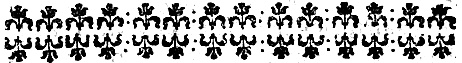
Romulidas, Myrtus[15] Paphia exornauit, ouantes;
Pura triumphales decorauit Laurea Põpas:
Prima dedit Quercus seruati præmia ciuis:
Sumit Idumæam præpes victoria Palmam:
Ast ea,[16] quȩ nutu superis dominatur & imis
Fortunæ stolidas, quæ scit, contundere vires,
[Pg 222]Quæque adamantæi domitrix prudẽtia fati,
Vnã ex Arboribus voluit sibi crescere morũ:
Hãc amat, hâc cingit canẽtia tẽpora fronde,
Vẽturi en agedum, secura, ignaraque corda,
Prospicite, & dubiæ casus prænoscite sortis.
Si pudor insanis, morus sapit, illa doloso
Nil temerè credit zephyro, nam veris adulti
Iam certum expectãs solẽ, nõ germinat ante
Frigoris infesti, quam cuncta recesserit aura:
Tum floretq; viretq; simul, longæq; repẽdit
Dãna moræ, atq; vnâ totã se nocte profũdit.
Viderat Æmoniâ nudam quam vesper ab[17] Oetâ,
Proximus[18] Idæo de vertice cernit Eous
Frondosã, & pariter grauidã, partuq; leuatã.
Sic properat tenerũ germen, ne frigidus aer
Manè coquat; medione die ne torreat ȩstus.
Insidias cæli ne tunc vereare sereni
Ampliùs, & vasto quæ cæca pericula Ponto:
Vt bene subductam deducas nauita Pinum,
[Pg 223]Sint tibi[19] Vergiliȩ, videas cũ germina mori.
Quin vbi dilectis cultoribus annua Poma
Reddidit, hybernis ne frondibus incubet Auster,
Aduerso pugnãs Boreæ, & certamine fratrũ,
Collisi inter se frangantur in arbore rami,
Sponte sua capitis sacri deponit honorem.
Vtque minus fiat sæuis obnoxia ventis
Iratique Iouis telo, fugit ardua, Morus,
Morus in antiquis arbor gratissima lucis.
Ad Lunæ radios hâc ludunt sæpe sub vmbra
Cõsertȩ Satyris Nymphȩ, plaudũtq; choreas,
Sæpe legit fœtus[20] Ægle formosa caducos,
Ebria[21] Sileno queis sublinat ora jacenti.
Poma gerit morus triplici distincta colore,
Nã paribus spatijs albẽtq; rubentq; nigrẽtq;
At color ille parum lætus, qui fructibus ater,
Omina sanguineis nec sunt nisi tristia moris;
Quid te nigra mouent? niger est[22] Phæbeius oscen,
Nec tamen augurio quicquam fælicius illo,
[Pg 224]Solis vbi nitido veniens spectatur ab ortu.
Astrorũ & somnimater, nox alma, quadrigis
Inuehitur nigris: ebeno tumet India nigro:
Laudamus nigros oculos, nigrumq; capillũ,
Ac nigras violas,[23] fului editus imbre metalli
Deperijt nigros Cepheæ Virginis artus.
Quod vero funesta putãt de sanguine mora,
In vulgum has sparsit[24] Babylonia fabula nugas;
Dat meritas igitur pænas & pẽdet Arachne,
Inuisique operis casso est addicta labori;
Non quod Palladiæ cõtenderit ȩmula telæ,
Mortalisq; Deam justas stimularit in iras,
Sed potius geminæ quod per mẽdacia cædis
Inuidiâ morũ, miserosq; onerauit Amores,
Assyrio tingens lugentia poma cruore.
Adde quod & nostris Regionibus alba leguntur,
[Pg 225]Antiquis ignara Italis, cæloque latino.
Iam nec Pæoniæ, jam nec succus Panaceæ
Dictamniq; feris, notissima gramina, capris,
Iudice me, moris certare salubribus ausint.
Nec mihi[25] Moly tuum referas, herbamq; potentem
Capte oculis vates; à Moris plura petuntur
Prȩsidia, & plures illis natura creatrix
Vi quadam occultâ cõcessit pellere morbos.
His ideò[26] Catius finiri prandia jussit,
Cecropio Catius sapientũ primus in horto;
Inde fit ad noxas ægri prope corporis õnes
Panchrestos,[27] vero perhibent vt nomine Graij.
Mororum infuso coalescunt vulnera succo:
Auribus, atque ori prodest, aluoq; moranti,
Languentemque leuat stomachũ, capitisque dolorem.
Discutit & veteres panos, & tormina sedat.
Vipereo est hostis generi, tetrisque venenis,
[Pg 226]Thessala, quæ tellus, quæque in mala pocula gignit,
Vncta prometheo cautes mæotica tabo.
Arboris ejusdem folijs medicabere tritis
Artubus ambustis, & diri morsibus hydri.
Saucius hoc nosset[28] magni præceptor Achillis,
Nõ Deus optasset lethum, nec Lemnia tanto
Saxa fatigasset gemitu[29] Pæantius heros.
Hirsuto hinc alitur spectãdus corpore Bombyx;
Nascũnturq; domi, quæ quõdã à littore rubro
Mollia distincti mittebant vellera seres.
Radicis sileo varios, & corticis vsus,
Morborũ auxilijs hæc tota est nobilis Arbor,
Mæonijsque cani non dignior vlla camænis.
[Pg 227]
Qvò me Phœbe, rapis? quas hinc sublatus in auras,
Aera per liquidũ, rapidis circumuehor alis?
Vos ne adeo[30] Serum intueor mollissima Regna
Lanificos cõplexa greges, agnosco parẽtem
Bombycemq; sinu recubantẽ molliter albo.
Te quoque,[31] quam memorant primã euoluisse nitentes
Folliculos, vnde in paruæ collecta figuram
Alitis, ignotas pennâ trepidante per auras
Tinea carpsit iter, dulcesq; animãte susurros
Ore, poli lætis resonarunt æquora bombis.
[Pg 228]Ten igitur vermis video nutricula,[32] Thisbe,
Errantẽue sinu placidè amplexaris alunum,
Scilicet, hũc morus ramo frõdente tenellum
Excipit, & claras magnũ trãsmittit ad Artes.
Namque vbi ter pigro renouauit corpora somno,
Iam senium increpitans, & pleni pondera ventris,
Continuò, tanta est edendi gloria fili,
Exercetur, & effundit quæsita per Æuum
Stamina, ditis opes vteri, suspensaq; densos
Fila regens inter ramos, atque ordine ducẽs,
Mille legit, relegitque vias, & circinat orbes
Sponte sua donec niueo se carcere claudat.
Mox autem interior circũ vndique stamina densat,
Albentiq; Thoro immoriens glomeratur in ouum.
Sed neq; tũ tineȩ vllus honos, aut gloria filo,
Pãphila ni modicos Bõbicũ euoluere folles,
Aut aperire caui docuisset tegmina linthei.
En etiã digitis prætentat mollibus oram
Educitque globo, lucisque emittit in auras
Rursus aui similem, sed te ne subdola captet
Et dulcem pullis Philomela immitibus escã,
[Pg 229]Auferat, Ah vereor! melius cõcluse latebis,
Hanc sine necquiquam modulis, crispoque susurro
Blãdiri, & tenues disperdere carmẽ in auras,
Ni facias, rostro implebit crudelior alui
Ingluuiẽ, ac viuo viua abdet corpora busto.
Cætera quinetiam volucrũ lætissima turba
Gaudet in incautos vermes inuadere, sedDij
Dij prohibete nefas, recreet mage carmine dulci,
Vnguibus abstineat. Niueo jam plurima surgunt
Bombici tabulata, gradus aulæque per altos
Mille. Prius pubes stabulãtem rustica ramis
In nemora alta videns errare, ignara silebat,
Hic vbi nascenti Seres dominantur Eoo,
Deterior donec paulatim & de color, artes
Extudit, & duros homines emollijt ætas;
Fortunate nimis, diuũq; hominũq; superba
Gloria, centeno reparans tua funera fœtu;
Viue sacris Bombix decus admirabile Templis,
Viue ducũ, Regumq; augustis addite pallis,
Nec tua lanigeræ superabunt fila bidentes
Tergoribus niueis, quãuis sua vellera laudet
[Pg 230]Hispalis, & magno Tyrios incocta rubores
Mutaris[33] Milete, olim tibi[34] Phrixea cedẽt,
Tu quoque ne[35] Biturix contra tua mollia jactes
Vellera, nec facies, etenim jam vilia sordent.
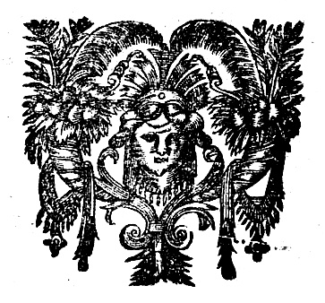
[15] Myrtus Paphia, quia Veneri sacra, Venus autem in vrbe Paphia, celeberrimo in Templo colebatur.
[16] Morus quippe est sapientiæ symbolum, non enim ante germinat, quam frigus penitus fugatum esse cognouerit, & fætum celerrimè grandit ac maturat, ne caloris aduentantis injuriâ lædi possit.
[17] Oeta Æmonia, siue Thessalica, est enim mons Thessaliȩ in Græcia, in quo monte, vt inquit Seruius, stellæ videntur occidere.
[18] Sicut de monte Ida nasci.
[19] Vergiliæ seu Pleiades, sunt septẽ stellȩ ante genua Tauri quæ ortu suo primæ nauigationis tempus ostendunt.
[20] Ægle fuit Nympha hoc nomine, vna Naiadum.
[21] Sileno, id est Bacchi nutritio, quem in antro jacentem pueri deridebant.
[22] Aquila Ioui Sacra.
[23] Perseus, Iouis filius, ex Danae, quam Iupiter commutatus in speciem aurei imbris vitiauit. Hic Andromedam, Cephei, Regis Æthiopum, filiam, vxorem duxir.
[24] Pyramus, adolescens Babylonius, mutuo Thisbes amore captus, vbi ejus domo ex pacto egressæ, cruentatã reperit vestem, ratus esse deuoratam, gladio se sub moro interfecit; illa autem superueniens, multa gemens & querens, eidem gladio incubuit. Morus autem fructus antea candidos in nigrum colorem mutauit.
[25] Moly est herba Homeri carmine celeberrima.
[26] Cato inter Grȩcos sapientissimus scripsit librum de re rustica.
[27] Medicamentum quod ad omnes morbos conducit.
[28] Chiron, Achillis Pædagogus, in medicina peritissimus, sagittâ hydræ lerneæ veneno imbutà vulneratus, durissimis cruciatibus conficiebatur morique optabat, sed non poterat, quod vtroque parente immortali natus fuisset.
[29] Vulcanus Iouis filius è cælo deturbatus in lemnum Insulam.
[30] Seres sunt populi Scythiæ Asiaticæ à Sera vrbe dicti, apud quos arbores lanam tenuissimam, ex qua vestimenta serica fiebant, proferre creditæ sunt, quia vermes eandem lanuginem producentes nutrierunt.
[31] Pamphila, Coa mulier, quæ prima telas Bombicum rediri, rursusque texere inuenit.
[32] Thisbe, id est morus, quia hæc arbor fuit conscia amorum Thisbes.
[33] Miletus, Ciuitas Asiȩ, vbi tingebantur lanæ pretiosissimæ.
[34] Vellus aureum quod Phrixus in Templo suspendit.
[35] Biturix, Ciuitas Galliæ Aquitanicȩ.
[Pg 231]
| Pag. | Reg. | ||
|---|---|---|---|
| 12. | 11. | & | que |
| 14. | 2. | Outoubro | Outubro. |
| 27. | vltim. | infali,uel | infaliuel |
| 56. | vltim. | po | do |
| 69. | 3. | com elle | como elle, |
| 118. | 2. | â inteira | a inteira |
| 129. | 1. | ajudas | ajuda. |
| 214. | vltim. | sepulus | sepultus |
| 219. | 15. | comites | comes |
| 221. | 6. | contendere | contundere |